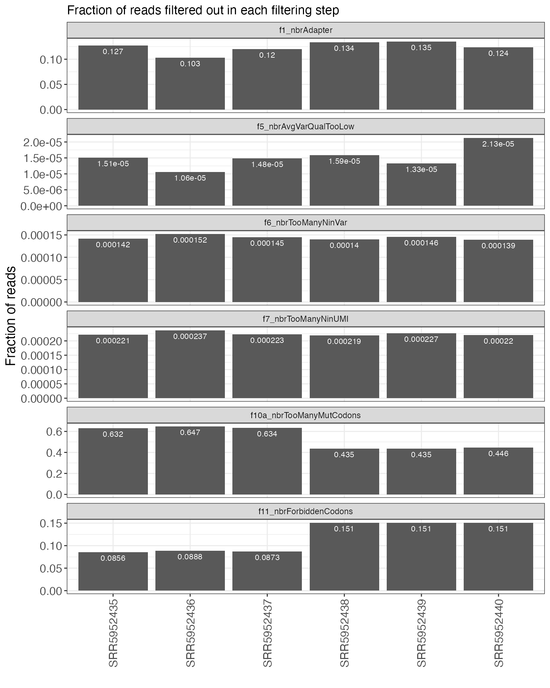
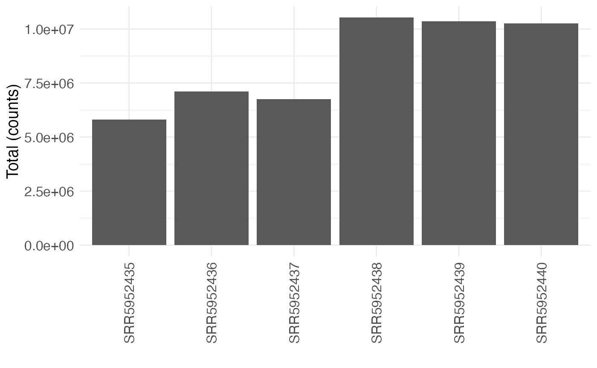
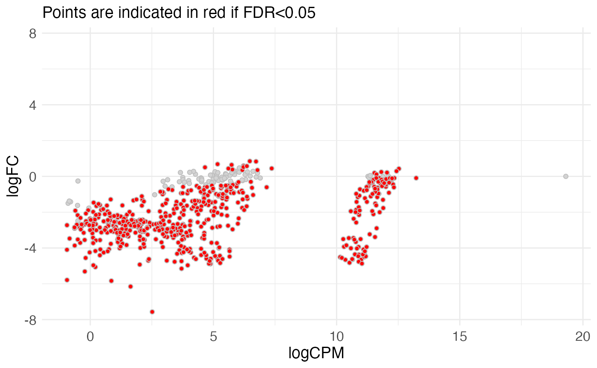

Deep mutational scanning analysis with mutscan
Charlotte Soneson and Michael Stadler
21 January 2022
mutscan.Rmd
library(SummarizedExperiment)
library(mutscan)Introduction
mutscan provides functionality for processing and visualizing Deep Mutational Scanning and other similar types of data, starting from single-end or paired-end FASTQ files. A broad range of library designs can be processed, encompassing both TRANS experiments (considering pairs of proteins) and CIS experiments (studying a single protein).
The figure below provides a high-level overview of the mutscan functionality, which will be described in more detail in the following sections.

Overview of the mutscan functionality. The digestFastqs() function processes each sequencing library separately, and generates an output object containing, among other things, the count table and a summary of the filtering steps. The summarizeExperiment() function takes one or more of these objects and combines them into a SummarizedExperiment object, that can then be used for downstream analysis such as plotting and statistical testing.
Example data
The mutscan package contains several small example FASTQ files representing different types of experiments:
datadir <- system.file("extdata", package = "mutscan")
dir(datadir)
#> [1] "cisInput_1.fastq.gz" "cisInput_2.fastq.gz" "cisOutput_1.fastq.gz"
#> [4] "cisOutput_2.fastq.gz" "GSE102901_cis_se.rds" "leujunt0_1.fastq.gz"
#> [7] "leujunt0_2.fastq.gz" "transInput_1.fastq.gz" "transInput_2.fastq.gz"
#> [10] "transOutput_1.fastq.gz" "transOutput_2.fastq.gz"-
transInput_{1,2}.fastq.gz,transOutput_{1,2}.fastq.gz- data from TRANS experiment in [@Diss2018]. The forward and reverse reads correspond to the mutated FOS and JUN sequences, respectively. Each read consists of a UMI sequence, followed by a constant sequence and the variable region. -
cisInput_{1,2}.fastq.gz,cisOutput_{1,2}.fastq.gz- data from CIS experiment in [@Diss2018]. The forward and reverse reads both correspond to the mutated FOS sequence. Each read consists of a UMI sequence, followed by a constant sequence and the variable region. -
GSE102901_cis_se.rds- aSummarizedExperimentobject obtained by processing the full CIS data from [@Diss2018]. -
leujunt0_{1,2}.fastq.gz- unpublished data; the forward read corresponds to an unmutated sequence of one of 46 leucine zipper sequences, and the reverse read corresponds to mutated JUN sequences. Each read contains a (frame-shifted) primer sequence, followed by the variable region.
Processing Deep Mutational Scanning data
Read composition specification
The main function for processing the Deep Mutational Scanning FASTQ files is digestFastqs(). This function requires the specification of paths to compressed FASTQ file(s) and the composition of the reads in these files. The composition is specified by the user, and is given in the form of a character string indicating the parts constituting the respective read, and an integer vector specifying the lengths of the individual parts. The permitted components are:
-
S(skip) - nucleotide(s) to skip -
U(UMI) - UMI sequence -
C(constant) - constant sequence, can be used e.g. to estimate the sequencing error rate if available -
V(variable) - nucleotides corresponding to the variable region -
P(primer) - a primer sequence, which may appear in a nonspecified position in the read but whose position defines the start or end position of other components.
A read can have several components of the same type (e.g., skipped nucleotides both in the beginning or the end, or two variable regions separated by a primer). In such cases, mutscan will concatenate all components of the same type in the analysis.
As an example, a read with the following composition:
[1 skipped nt] - [10 nt UMI] - [18 nt constant sequence] - [96 nt variable region]
would be specified to digestFastqs() by an elements string "SUCV", and an element length vector c(1, 10, 18, 96).
The package can also accommodate designs with primer sequences. In this situation, the primer acts as an ‘anchor’, and the read composition before and after the primer is specified. For example, a read with the following composition:
[unknown sequence] - [10 nt primer] - [variable region, constituting the remainder of the read]
would be represented by an elements string "SPV", and an element length vector c(-1, 10, -1), where the -1 indicates that the corresponding read part consists of the remaining part of the read, not accounted for by any of the other specified parts. In addition, the sequence of the primer must be specified, and any read where the primer is not present will be discarded.
The forward and reverse reads can have different compositions. The user can also specify whether the variable parts of the forward and/or reverse reads should be reverse complemented before being processed, and whether the variable regions of the forward and reverse reads should be merged into a single consensus sequence.
Filtering
In addition to reading the FASTQ files, the digestFastqs() function will perform a series of filtering steps, in the following order:
- Search for perfect matches to forward/reverse adapter sequences, filter out the read pair if a match is found in either the forward or reverse read.
- Search for perfect matches to forward/reverse primer sequences, filter out the read pair if not both are found.
- Filter out reads whose length is not compatible with the indicated composition.
- If forward and reverse variable regions should be merged, filter out read pairs where no valid overlap could be found.
- Filter out read pair if the average quality in the variable region is below
avePhredMinin either the forward or reverse read (or the consensus sequence if they are merged). - Filter out read pair if the number of Ns in the variable region exceeds
variableNMax. - Filter out read pair if the number of Ns in the combined forward and reverse UMI sequence exceeds
umiNMax. - Filter out read pair if any mutated base has a quality below
mutatedPhredMin. - Filter out read pair if the number of mutated codons exceeds
nbrMutatedCodonsMaxor the number of mutated nucleotides exceedsnbrMutatedBasesMax. - Filter out read pair of there are multiple equally close best hits among the provided wild type sequences.
- Filter out read pair if any of the mutated codons match any of the codons encoded by
forbiddenMutatedCodons. - Filter out read pair if there are too many mutations in the constant sequence, or if there are multiple equally close best hits among the provided constant sequences.
Processing TRANS data
Here, we illustrate the processing of the provided TRANS experiment example data. We filter out reads with any adapter match, an average phred quality below 20, any Ns in the UMI or variable sequence, more than one mutated codon, or a mutated codon ending with A or T (represented by the NNW value of the forbiddenMutatedCodonsForward and forbiddenMutatedCodonsReverse arguments).
transInput <- digestFastqs(
fastqForward = file.path(datadir, "transInput_1.fastq.gz"),
fastqReverse = file.path(datadir, "transInput_2.fastq.gz"),
mergeForwardReverse = FALSE,
revComplForward = FALSE, revComplReverse = FALSE,
adapterForward = "GGAAGAGCACACGTC",
adapterReverse = "GGAAGAGCGTCGTGT",
elementsForward = "SUCV", elementsReverse = "SUCV",
elementLengthsForward = c(1, 10, 18, 96),
elementLengthsReverse = c(1, 8, 20, 96),
constantForward = "AACCGGAGGAGGGAGCTG",
constantReverse = "GAAAAAGGAAGCTGGAGAGA",
avePhredMinForward = 20, avePhredMinReverse = 20,
variableNMaxForward = 0, variableNMaxReverse = 0, umiNMax = 0,
wildTypeForward = "ACTGATACACTCCAAGCGGAGACAGACCAACTAGAAGATGAGAAGTCTGCTTTGCAGACCGAGATTGCCAACCTGCTGAAGGAGAAGGAAAAACTA",
wildTypeReverse = "ATCGCCCGGCTGGAGGAAAAAGTGAAAACCTTGAAAGCTCAGAACTCGGAGCTGGCGTCCACGGCCAACATGCTCAGGGAACAGGTGGCACAGCTT",
nbrMutatedCodonsMaxForward = 1, nbrMutatedCodonsMaxReverse = 1,
forbiddenMutatedCodonsForward = "NNW", forbiddenMutatedCodonsReverse = "NNW",
mutNameDelimiter = ".",
constantMaxDistForward = -1,
constantMaxDistReverse = -1,
verbose = FALSE
)The digestFastqs() function returns a list with four elements. The parameters list records all parameter values used during the processing, as well as the package version and time of processing.
transInput$parameters
#> $fastqForward
#> [1] "/Users/runner/work/_temp/Library/mutscan/extdata/transInput_1.fastq.gz"
#>
#> $fastqReverse
#> [1] "/Users/runner/work/_temp/Library/mutscan/extdata/transInput_2.fastq.gz"
#>
#> $mergeForwardReverse
#> [1] FALSE
#>
#> $minOverlap
#> [1] 0
#>
#> $maxOverlap
#> [1] 0
#>
#> $minMergedLength
#> [1] 0
#>
#> $maxMergedLength
#> [1] 0
#>
#> $maxFracMismatchOverlap
#> [1] 1
#>
#> $greedyOverlap
#> [1] TRUE
#>
#> $revComplForward
#> [1] FALSE
#>
#> $revComplReverse
#> [1] FALSE
#>
#> $elementsForward
#> [1] "SUCV"
#>
#> $elementLengthsForward
#> [1] 1 10 18 96
#>
#> $elementsReverse
#> [1] "SUCV"
#>
#> $elementLengthsReverse
#> [1] 1 8 20 96
#>
#> $adapterForward
#> [1] "GGAAGAGCACACGTC"
#>
#> $adapterReverse
#> [1] "GGAAGAGCGTCGTGT"
#>
#> $primerForward
#> [1] ""
#>
#> $primerReverse
#> [1] ""
#>
#> $wildTypeForward
#> f
#> "ACTGATACACTCCAAGCGGAGACAGACCAACTAGAAGATGAGAAGTCTGCTTTGCAGACCGAGATTGCCAACCTGCTGAAGGAGAAGGAAAAACTA"
#>
#> $wildTypeReverse
#> r
#> "ATCGCCCGGCTGGAGGAAAAAGTGAAAACCTTGAAAGCTCAGAACTCGGAGCTGGCGTCCACGGCCAACATGCTCAGGGAACAGGTGGCACAGCTT"
#>
#> $constantForward
#> [1] "AACCGGAGGAGGGAGCTG"
#>
#> $constantReverse
#> [1] "GAAAAAGGAAGCTGGAGAGA"
#>
#> $avePhredMinForward
#> [1] 20
#>
#> $avePhredMinReverse
#> [1] 20
#>
#> $variableNMaxForward
#> [1] 0
#>
#> $variableNMaxReverse
#> [1] 0
#>
#> $umiNMax
#> [1] 0
#>
#> $nbrMutatedCodonsMaxForward
#> [1] 1
#>
#> $nbrMutatedCodonsMaxReverse
#> [1] 1
#>
#> $nbrMutatedBasesMaxForward
#> [1] -1
#>
#> $nbrMutatedBasesMaxReverse
#> [1] -1
#>
#> $forbiddenMutatedCodonsForward
#> [1] "AAA" "AAT" "ACA" "ACT" "AGA" "AGT" "ATA" "ATT" "CAA" "CAT" "CCA" "CCT"
#> [13] "CGA" "CGT" "CTA" "CTT" "GAA" "GAT" "GCA" "GCT" "GGA" "GGT" "GTA" "GTT"
#> [25] "TAA" "TAT" "TCA" "TCT" "TGA" "TGT" "TTA" "TTT"
#>
#> $forbiddenMutatedCodonsReverse
#> [1] "AAA" "AAT" "ACA" "ACT" "AGA" "AGT" "ATA" "ATT" "CAA" "CAT" "CCA" "CCT"
#> [13] "CGA" "CGT" "CTA" "CTT" "GAA" "GAT" "GCA" "GCT" "GGA" "GGT" "GTA" "GTT"
#> [25] "TAA" "TAT" "TCA" "TCT" "TGA" "TGT" "TTA" "TTT"
#>
#> $useTreeWTmatch
#> [1] FALSE
#>
#> $mutatedPhredMinForward
#> [1] 0
#>
#> $mutatedPhredMinReverse
#> [1] 0
#>
#> $mutNameDelimiter
#> [1] "."
#>
#> $constantMaxDistForward
#> [1] -1
#>
#> $constantMaxDistReverse
#> [1] -1
#>
#> $variableCollapseMaxDist
#> [1] 0
#>
#> $variableCollapseMinReads
#> [1] 0
#>
#> $variableCollapseMinRatio
#> [1] 0
#>
#> $umiCollapseMaxDist
#> [1] 0
#>
#> $filteredReadsFastqForward
#> [1] ""
#>
#> $filteredReadsFastqReverse
#> [1] ""
#>
#> $maxNReads
#> [1] -1
#>
#> $nThreads
#> [1] 1
#>
#> $chunkSize
#> [1] 100000
#>
#> $processingInfo
#> [1] "Processed by mutscan v0.2.26 on 2022-01-21 14:31:53"The filterSummary data.frame contains a summary of the number of reads filtered out in each step. Note that for any given filtering step, only the reads retained by the previous filters are considered. The numbers in the filter column names indicate the order of the filters.
transInput$filterSummary
#> nbrTotal f1_nbrAdapter f2_nbrNoPrimer f3_nbrReadWrongLength
#> 1 1000 314 0 0
#> f4_nbrNoValidOverlap f5_nbrAvgVarQualTooLow f6_nbrTooManyNinVar
#> 1 0 7 0
#> f7_nbrTooManyNinUMI f8_nbrTooManyBestWTHits f9_nbrMutQualTooLow
#> 1 0 0 0
#> f10a_nbrTooManyMutCodons f10b_nbrTooManyMutBases f11_nbrForbiddenCodons
#> 1 392 0 8
#> f12_nbrTooManyMutConstant f13_nbrTooManyBestConstantHits nbrRetained
#> 1 0 0 279The summaryTable provides the number of reads and unique UMIs observed for each variable sequence pair. In addition, it contains a column mutantName, which provides a shorthand notation for each mutant. The format of the values in this column is a combination of WTS.xx.NNN (separated by _), where WTS provides the name of the closest matching wild type sequence (if only one, unnamed wild type sequence is provided, the name will be f/r depending on if it corresponds to the forward/reverse read, respectively). The xx part indicates the mutated codon or nucleotide number, and NNN gives the observed sequence for the mutated codon or nucleotide. A sequence without mutations is named WTS.0.WT, where, again, WTS is the name of the matching wild type sequence.
head(transInput$summaryTable)
#> mutantName
#> 1 f.0.WT_r.13.CCC
#> 2 f.0.WT_r.13.CTC
#> 3 f.0.WT_r.2.TCC
#> 4 f.0.WT_r.20.ACC
#> 5 f.0.WT_r.30.AGG
#> 6 f.0.WT_r.30.GGG
#> sequence
#> 1 ACTGATACACTCCAAGCGGAGACAGACCAACTAGAAGATGAGAAGTCTGCTTTGCAGACCGAGATTGCCAACCTGCTGAAGGAGAAGGAAAAACTA_ATCGCCCGGCTGGAGGAAAAAGTGAAAACCTTGAAACCCCAGAACTCGGAGCTGGCGTCCACGGCCAACATGCTCAGGGAACAGGTGGCACAGCTT
#> 2 ACTGATACACTCCAAGCGGAGACAGACCAACTAGAAGATGAGAAGTCTGCTTTGCAGACCGAGATTGCCAACCTGCTGAAGGAGAAGGAAAAACTA_ATCGCCCGGCTGGAGGAAAAAGTGAAAACCTTGAAACTCCAGAACTCGGAGCTGGCGTCCACGGCCAACATGCTCAGGGAACAGGTGGCACAGCTT
#> 3 ACTGATACACTCCAAGCGGAGACAGACCAACTAGAAGATGAGAAGTCTGCTTTGCAGACCGAGATTGCCAACCTGCTGAAGGAGAAGGAAAAACTA_ATCTCCCGGCTGGAGGAAAAAGTGAAAACCTTGAAAGCTCAGAACTCGGAGCTGGCGTCCACGGCCAACATGCTCAGGGAACAGGTGGCACAGCTT
#> 4 ACTGATACACTCCAAGCGGAGACAGACCAACTAGAAGATGAGAAGTCTGCTTTGCAGACCGAGATTGCCAACCTGCTGAAGGAGAAGGAAAAACTA_ATCGCCCGGCTGGAGGAAAAAGTGAAAACCTTGAAAGCTCAGAACTCGGAGCTGGCGACCACGGCCAACATGCTCAGGGAACAGGTGGCACAGCTT
#> 5 ACTGATACACTCCAAGCGGAGACAGACCAACTAGAAGATGAGAAGTCTGCTTTGCAGACCGAGATTGCCAACCTGCTGAAGGAGAAGGAAAAACTA_ATCGCCCGGCTGGAGGAAAAAGTGAAAACCTTGAAAGCTCAGAACTCGGAGCTGGCGTCCACGGCCAACATGCTCAGGGAACAGGTGAGGCAGCTT
#> 6 ACTGATACACTCCAAGCGGAGACAGACCAACTAGAAGATGAGAAGTCTGCTTTGCAGACCGAGATTGCCAACCTGCTGAAGGAGAAGGAAAAACTA_ATCGCCCGGCTGGAGGAAAAAGTGAAAACCTTGAAAGCTCAGAACTCGGAGCTGGCGTCCACGGCCAACATGCTCAGGGAACAGGTGGGGCAGCTT
#> nbrMutBases nbrMutCodons nbrReads maxNbrReads nbrUmis
#> 1 2 1 1 1 1
#> 2 3 1 1 1 1
#> 3 1 1 1 1 1
#> 4 1 1 1 1 1
#> 5 3 1 1 1 1
#> 6 2 1 1 1 1Finally, the errorStatistics data.frame lists the number of matching and mismatching bases in the constant sequences, stratified by the phred quality score (from 0 to 99).
transInput$errorStatistics[rowSums(transInput$errorStatistics[, -1]) != 0, ]
#> PhredQuality nbrMatchForward nbrMismatchForward nbrMatchReverse
#> 15 14 160 11 204
#> 23 22 52 0 14
#> 28 27 302 4 474
#> 34 33 472 0 462
#> 38 37 4020 1 4405
#> nbrMismatchReverse
#> 15 17
#> 23 0
#> 28 3
#> 34 1
#> 38 0The errorStatistics output can be used to estimate the sequencing error rate:
(propErrorsConstantF <- sum(transInput$errorStatistics$nbrMismatchForward) /
(nchar(transInput$parameters$constantForward) * transInput$filterSummary$nbrRetained))
#> [1] 0.003185982
(propErrorsConstantR <- sum(transInput$errorStatistics$nbrMismatchReverse) /
(nchar(transInput$parameters$constantReverse) * transInput$filterSummary$nbrRetained))
#> [1] 0.003763441Processing CIS data
Here, we illustrate the processing of the provided CIS experiment example data. As for the TRANS data, we filter out reads with any adapter match, an average phred quality below 20, any Ns in the UMI or variable sequence, more than one mutated codon, or a mutated codon ending with A or T (represented by the NNW value of the forbiddenMutatedCodonsForward argument). In this case, the forward and reverse variable sequences will be merged into one variable sequence (since mergeForwardReverse is TRUE) and thus only one wild type sequence is provided (the wildTypeReverse argument will be ignored if specified).
cisInput <- digestFastqs(
fastqForward = file.path(datadir, "cisInput_1.fastq.gz"),
fastqReverse = file.path(datadir, "cisInput_2.fastq.gz"),
mergeForwardReverse = TRUE,
minOverlap = 0, maxOverlap = 0,
maxFracMismatchOverlap = 1, greedyOverlap = TRUE,
revComplForward = FALSE, revComplReverse = TRUE,
adapterForward = "GGAAGAGCACACGTC",
adapterReverse = "GGAAGAGCGTCGTGT",
elementsForward = "SUCV", elementsReverse = "SUCVS",
elementLengthsForward = c(1, 10, 18, 96),
elementLengthsReverse = c(1, 7, 17, 96, -1),
constantForward = "AACCGGAGGAGGGAGCTG",
constantReverse = "GAGTTCATCCTGGCAGC",
primerForward = "", primerReverse = "",
avePhredMinForward = 20, avePhredMinReverse = 20,
variableNMaxForward = 0, variableNMaxReverse = 0, umiNMax = 0,
wildTypeForward = "ACTGATACACTCCAAGCGGAGACAGACCAACTAGAAGATGAGAAGTCTGCTTTGCAGACCGAGATTGCCAACCTGCTGAAGGAGAAGGAAAAACTA",
wildTypeReverse = "",
nbrMutatedCodonsMaxForward = 1, nbrMutatedCodonsMaxReverse = 1,
forbiddenMutatedCodonsForward = "NNW", forbiddenMutatedCodonsReverse = "NNW",
mutNameDelimiter = ".",
constantMaxDistForward = -1,
constantMaxDistReverse = -1,
verbose = TRUE
)
#> done enumerating forbidden codons (32)
#> done enumerating forbidden codons (32)
#> start reading sequences for file pair 1 of 1...
#> 1000 read pairs processed (16.7% retained)
#> done reading sequences
#> retained 67 unique features
cisInput$parameters
#> $fastqForward
#> [1] "/Users/runner/work/_temp/Library/mutscan/extdata/cisInput_1.fastq.gz"
#>
#> $fastqReverse
#> [1] "/Users/runner/work/_temp/Library/mutscan/extdata/cisInput_2.fastq.gz"
#>
#> $mergeForwardReverse
#> [1] TRUE
#>
#> $minOverlap
#> [1] 0
#>
#> $maxOverlap
#> [1] 0
#>
#> $minMergedLength
#> [1] 0
#>
#> $maxMergedLength
#> [1] 0
#>
#> $maxFracMismatchOverlap
#> [1] 1
#>
#> $greedyOverlap
#> [1] TRUE
#>
#> $revComplForward
#> [1] FALSE
#>
#> $revComplReverse
#> [1] TRUE
#>
#> $elementsForward
#> [1] "SUCV"
#>
#> $elementLengthsForward
#> [1] 1 10 18 96
#>
#> $elementsReverse
#> [1] "SUCVS"
#>
#> $elementLengthsReverse
#> [1] 1 7 17 96 -1
#>
#> $adapterForward
#> [1] "GGAAGAGCACACGTC"
#>
#> $adapterReverse
#> [1] "GGAAGAGCGTCGTGT"
#>
#> $primerForward
#> [1] ""
#>
#> $primerReverse
#> [1] ""
#>
#> $wildTypeForward
#> f
#> "ACTGATACACTCCAAGCGGAGACAGACCAACTAGAAGATGAGAAGTCTGCTTTGCAGACCGAGATTGCCAACCTGCTGAAGGAGAAGGAAAAACTA"
#>
#> $wildTypeReverse
#> r
#> ""
#>
#> $constantForward
#> [1] "AACCGGAGGAGGGAGCTG"
#>
#> $constantReverse
#> [1] "GAGTTCATCCTGGCAGC"
#>
#> $avePhredMinForward
#> [1] 20
#>
#> $avePhredMinReverse
#> [1] 20
#>
#> $variableNMaxForward
#> [1] 0
#>
#> $variableNMaxReverse
#> [1] 0
#>
#> $umiNMax
#> [1] 0
#>
#> $nbrMutatedCodonsMaxForward
#> [1] 1
#>
#> $nbrMutatedCodonsMaxReverse
#> [1] 1
#>
#> $nbrMutatedBasesMaxForward
#> [1] -1
#>
#> $nbrMutatedBasesMaxReverse
#> [1] -1
#>
#> $forbiddenMutatedCodonsForward
#> [1] "AAA" "AAT" "ACA" "ACT" "AGA" "AGT" "ATA" "ATT" "CAA" "CAT" "CCA" "CCT"
#> [13] "CGA" "CGT" "CTA" "CTT" "GAA" "GAT" "GCA" "GCT" "GGA" "GGT" "GTA" "GTT"
#> [25] "TAA" "TAT" "TCA" "TCT" "TGA" "TGT" "TTA" "TTT"
#>
#> $forbiddenMutatedCodonsReverse
#> [1] "AAA" "AAT" "ACA" "ACT" "AGA" "AGT" "ATA" "ATT" "CAA" "CAT" "CCA" "CCT"
#> [13] "CGA" "CGT" "CTA" "CTT" "GAA" "GAT" "GCA" "GCT" "GGA" "GGT" "GTA" "GTT"
#> [25] "TAA" "TAT" "TCA" "TCT" "TGA" "TGT" "TTA" "TTT"
#>
#> $useTreeWTmatch
#> [1] FALSE
#>
#> $mutatedPhredMinForward
#> [1] 0
#>
#> $mutatedPhredMinReverse
#> [1] 0
#>
#> $mutNameDelimiter
#> [1] "."
#>
#> $constantMaxDistForward
#> [1] -1
#>
#> $constantMaxDistReverse
#> [1] -1
#>
#> $variableCollapseMaxDist
#> [1] 0
#>
#> $variableCollapseMinReads
#> [1] 0
#>
#> $variableCollapseMinRatio
#> [1] 0
#>
#> $umiCollapseMaxDist
#> [1] 0
#>
#> $filteredReadsFastqForward
#> [1] ""
#>
#> $filteredReadsFastqReverse
#> [1] ""
#>
#> $maxNReads
#> [1] -1
#>
#> $nThreads
#> [1] 1
#>
#> $chunkSize
#> [1] 100000
#>
#> $processingInfo
#> [1] "Processed by mutscan v0.2.26 on 2022-01-21 14:31:54"
cisInput$filterSummary
#> nbrTotal f1_nbrAdapter f2_nbrNoPrimer f3_nbrReadWrongLength
#> 1 1000 126 0 0
#> f4_nbrNoValidOverlap f5_nbrAvgVarQualTooLow f6_nbrTooManyNinVar
#> 1 0 0 44
#> f7_nbrTooManyNinUMI f8_nbrTooManyBestWTHits f9_nbrMutQualTooLow
#> 1 0 0 0
#> f10a_nbrTooManyMutCodons f10b_nbrTooManyMutBases f11_nbrForbiddenCodons
#> 1 581 0 82
#> f12_nbrTooManyMutConstant f13_nbrTooManyBestConstantHits nbrRetained
#> 1 0 0 167
cisInput$errorStatistics[rowSums(cisInput$errorStatistics[, -1]) != 0, ]
#> PhredQuality nbrMatchForward nbrMismatchForward nbrMatchReverse
#> 3 2 0 0 0
#> 15 14 51 1 41
#> 23 22 19 0 0
#> 28 27 79 1 56
#> 34 33 163 0 96
#> 38 37 2690 2 2620
#> nbrMismatchReverse
#> 3 4
#> 15 7
#> 23 0
#> 28 0
#> 34 1
#> 38 14The summaryTable now provides the number of reads and unique UMIs observed for each variable sequence, and all values in the mutNames column will start with f.
head(cisInput$summaryTable)
#> mutantName
#> 1 f.0.WT
#> 2 f.1.ACC
#> 3 f.1.ACG
#> 4 f.11.CTG
#> 5 f.13.GAC
#> 6 f.13.GAG
#> sequence
#> 1 ACTGATACACTCCAAGCGGAGACAGACCAACTAGAAGATGAGAAGTCTGCTTTGCAGACCGAGATTGCCAACCTGCTGAAGGAGAAGGAAAAACTA
#> 2 ACCGATACACTCCAAGCGGAGACAGACCAACTAGAAGATGAGAAGTCTGCTTTGCAGACCGAGATTGCCAACCTGCTGAAGGAGAAGGAAAAACTA
#> 3 ACGGATACACTCCAAGCGGAGACAGACCAACTAGAAGATGAGAAGTCTGCTTTGCAGACCGAGATTGCCAACCTGCTGAAGGAGAAGGAAAAACTA
#> 4 ACTGATACACTCCAAGCGGAGACAGACCAACTGGAAGATGAGAAGTCTGCTTTGCAGACCGAGATTGCCAACCTGCTGAAGGAGAAGGAAAAACTA
#> 5 ACTGATACACTCCAAGCGGAGACAGACCAACTAGAAGACGAGAAGTCTGCTTTGCAGACCGAGATTGCCAACCTGCTGAAGGAGAAGGAAAAACTA
#> 6 ACTGATACACTCCAAGCGGAGACAGACCAACTAGAAGAGGAGAAGTCTGCTTTGCAGACCGAGATTGCCAACCTGCTGAAGGAGAAGGAAAAACTA
#> nbrMutBases nbrMutCodons nbrReads maxNbrReads nbrUmis
#> 1 0 0 77 77 77
#> 2 1 1 2 2 2
#> 3 1 1 1 1 1
#> 4 1 1 1 1 1
#> 5 1 1 1 1 1
#> 6 1 1 1 1 1Processing TRANS data with primers
Here, we illustrate the processing of the provided example data, where the first read corresponds to one of 46 leucine zipper sequences, and the second read is a mutated JUN sequence. We first need to define the possible sequences for the forward read. If multiple wild type sequences are provided like here, mutscan will match each read against all of them and find the most similar one in each case.
leu <- c(
ATF2 = "GATCCTGATGAAAAAAGGAGAAAGTTTTTAGAGCGAAATAGAGCAGCAGCTTCAAGATGCCGACAAAAAAGGAAAGTCTGGGTTCAGTCTTTAGAGAAGAAAGCTGAAGACTTGAGTTCATTAAATGGTCAGCTGCAGAGTGAAGTCACCCTGCTGAGAAATGAAGTGGCACAGCTGAAACAGCTTCTTCTGGCT",
ATF7 = "GATCCAGATGAGCGACGGCAGCGCTTTCTGGAGCGCAACCGGGCTGCAGCCTCCCGCTGCCGCCAAAAGCGAAAGCTGTGGGTGTCCTCCCTAGAGAAGAAGGCCGAAGAACTCACTTCTCAGAACATTCAGCTGAGTAATGAAGTCACATTACTACGCAATGAGGTGGCCCAGTTGAAACAGCTACTGTTAGCT",
CREB5 = "GATCCGGACGAGAGGCGGCGGAAATTTCTGGAACGGAACCGGGCAGCTGCCACCCGCTGCAGACAGAAGAGGAAGGTCTGGGTGATGTCATTGGAAAAGAAAGCAGAAGAACTCACCCAGACAAACATGCAGCTTCAGAATGAAGTGTCTATGTTGAAAAATGAGGTGGCCCAGCTGAAACAGTTGTTGTTAACA",
ATF3 = "GAAGAAGATGAAAGGAAAAAGAGGCGACGAGAAAGAAATAAGATTGCAGCTGCAAAGTGCCGAAACAAGAAGAAGGAGAAGACGGAGTGCCTGCAGAAAGAGTCGGAGAAGCTGGAAAGTGTGAATGCTGAACTGAAGGCTCAGATTGAGGAGCTCAAGAACGAGAAGCAGCATTTGATATACATGCTCAACCTT",
JDP2 = "GAGGAAGAGGAGCGAAGGAAAAGGCGCCGGGAGAAGAACAAAGTCGCAGCAGCCCGATGCCGGAACAAGAAGAAGGAGCGCACGGAGTTTCTGCAGCGGGAATCCGAGCGGCTGGAACTCATGAACGCAGAGCTGAAGACCCAGATTGAGGAGCTGAAGCAGGAGCGGCAGCAGCTCATCCTGATGCTGAACCGA",
ATF4 = "GAGAAACTGGATAAGAAGCTGAAAAAAATGGAGCAAAACAAGACAGCAGCCACTAGGTACCGCCAGAAGAAGAGGGCGGAGCAGGAGGCTCTTACTGGTGAGTGCAAAGAGCTGGAAAAGAAGAACGAGGCTCTAAAAGAGAGGGCGGATTCCCTGGCCAAGGAGATCCAGTACCTGAAAGATTTGATAGAAGAG",
ATF5 = "ACCCGAGGGGACCGCAAGCAAAAGAAGAGAGACCAGAACAAGTCGGCGGCTCTGAGGTACCGCCAGCGGAAGCGGGCAGAGGGTGAGGCCCTGGAGGGCGAGTGCCAGGGGCTGGAGGCACGGAATCGCGAGCTGAAGGAACGGGCAGAGTCCGTGGAGCGCGAGATCCAGTACGTCAAGGACCTGCTCATCGAG",
CREBZF = "AGTCCCCGGAAGGCGGCGGCGGCCGCTGCCCGCCTTAATCGACTGAAGAAGAAGGAGTACGTGATGGGGCTGGAGAGTCGAGTCCGGGGTCTGGCAGCCGAGAACCAGGAGCTGCGGGCCGAGAATCGGGAGCTGGGCAAACGCGTACAGGCACTGCAGGAGGAGAGTCGCTACCTACGGGCAGTCTTAGCCAAC",
BATF2 = "CCCAAGGAGCAACAAAGGCAGCTGAAGAAGCAGAAGAACCGGGCAGCCGCCCAGCGAAGCCGGCAGAAGCACACAGACAAGGCAGACGCCCTGCACCAGCAGCACGAGTCTCTGGAAAAAGACAACCTCGCCCTGCGGAAGGAGATCCAGTCCCTGCAGGCCGAGCTGGCGTGGTGGAGCCGGACCCTGCACGTG",
BATF3 = "GAGGATGATGACAGGAAGGTCCGAAGGAGAGAAAAAAACCGAGTTGCTGCTCAGAGAAGTCGGAAGAAGCAGACCCAGAAGGCTGACAAGCTCCATGAGGAATATGAGAGCCTGGAGCAAGAAAACACCATGCTGCGGAGAGAGATCGGGAAGCTGACAGAGGAGCTGAAGCACCTGACAGAGGCACTGAAGGAG",
CEBPE = "AAAGATAGCCTTGAGTACCGGCTGAGGCGGGAGCGCAACAACATCGCCGTGCGCAAGAGCCGAGACAAGGCCAAGAGGCGCATTCTGGAGACGCAGCAGAAGGTGCTGGAGTACATGGCAGAGAACGAGCGCCTCCGCAGCCGCGTGGAGCAGCTCACCCAGGAGCTAGACACCCTCCGCAACCTCTTCCGCCAG",
BACH1 = "CTGGATTGTATCCATGATATTCGAAGAAGAAGTAAAAACAGAATTGCTGCACAGCGCTGTCGCAAGAGAAAACTTGACTGTATACAGAATCTTGAATCAGAAATTGAGAAGCTGCAAAGTGAAAAGGAGAGCTTGTTGAAGGAAAGAGATCACATTTTGTCAACTCTGGGTGAGACAAAGCAGAACCTAACTGGA",
BACH2 = "TTAGAGTTTATTCATGATGTCCGACGGCGCAGCAAGAACCGCATCGCGGCCCAGCGCTGCCGCAAAAGGAAACTGGACTGTATTCAGAATTTAGAATGTGAAATCCGCAAATTGGTGTGTGAGAAAGAGAAACTGTTGTCAGAGAGGAATCAACTGAAAGCATGCATGGGGGAACTGTTGGACAACTTCTCCTGC",
NFE2L1 = "CTGAGCCTCATCCGAGACATCCGGCGCCGGGGCAAGAACAAGATGGCGGCGCAGAACTGCCGCAAGCGCAAGCTGGACACCATCCTGAATCTGGAGCGTGATGTGGAGGACCTGCAGCGTGACAAAGCCCGGCTGCTGCGGGAGAAAGTGGAGTTCCTGCGCTCCCTGCGACAGATGAAGCAGAAGGTCCAGAGC",
NFE2 = "CTAGCGCTAGTCCGGGACATCCGACGACGGGGCAAAAACAAGGTGGCAGCCCAGAACTGCCGCAAGAGGAAGCTGGAAACCATTGTGCAGCTGGAGCGGGAGCTGGAGCGGCTGACCAATGAACGGGAGCGGCTTCTCAGGGCCCGCGGGGAGGCAGACCGGACCCTGGAGGTCATGCGCCAACAGCTGACAGAG",
NFIL3 = "AAGAAAGATGCTATGTATTGGGAAAAAAGGCGGAAAAATAATGAAGCTGCCAAAAGATCTCGTGAGAAGCGTCGACTGAATGACCTGGTTTTAGAGAACAAACTAATTGCACTGGGAGAAGAAAACGCCACTTTAAAAGCTGAGCTGCTTTCACTAAAATTAAAGTTTGGTTTAATTAGCTCCACAGCATATGCT",
FOS = "GAAGAAGAAGAGAAAAGGAGAATCCGAAGGGAAAGGAATAAGATGGCTGCAGCCAAATGCCGCAACCGGAGGAGGGAGCTGACTGATACACTCCAAGCGGAGACAGACCAACTAGAAGATGAGAAGTCTGCTTTGCAGACCGAGATTGCCAACCTGCTGAAGGAGAAGGAAAAACTAGAGTTCATCCTGGCAGCT",
FOSB = "GAGGAAGAGGAGAAGCGAAGGGTGCGCCGGGAACGAAATAAACTAGCAGCAGCTAAATGCAGGAACCGGCGGAGGGAGCTGACCGACCGACTCCAGGCGGAGACAGATCAGTTGGAGGAAGAAAAAGCAGAGCTGGAGTCGGAGATCGCCGAGCTCCAAAAGGAGAAGGAACGTCTGGAGTTTGTGCTGGTGGCC",
FOSL1 = "GAGGAAGAGGAGCGCCGCCGAGTAAGGCGCGAGCGGAACAAGCTGGCTGCGGCCAAGTGCAGGAACCGGAGGAAGGAACTGACCGACTTCCTGCAGGCGGAGACTGACAAACTGGAAGATGAGAAATCTGGGCTGCAGCGAGAGATTGAGGAGCTGCAGAAGCAGAAGGAGCGCCTAGAGCTGGTGCTGGAAGCC",
FOSL2 = "GAAGAGGAGGAGAAGCGTCGCATCCGGCGGGAGAGGAACAAGCTGGCTGCAGCCAAGTGCCGGAACCGACGCCGGGAGCTGACAGAGAAGCTGCAGGCGGAGACAGAGGAGCTGGAGGAGGAGAAGTCAGGCCTGCAGAAGGAGATTGCTGAGCTGCAGAAGGAGAAGGAGAAGCTGGAGTTCATGTTGGTGGCT",
MAFB = "GTGATCCGCCTGAAGCAGAAGCGGCGGACCCTGAAGAACCGGGGCTACGCCCAGTCTTGCAGGTATAAACGCGTCCAGCAGAAGCACCACCTGGAGAATGAGAAGACGCAGCTCATTCAGCAGGTGGAGCAGCTTAAGCAGGAGGTGTCCCGGCTGGCCCGCGAGAGAGACGCCTACAAGGTCAAGTGCGAGAAA",
JUN = "CAGGAGCGGATCAAGGCGGAGAGGAAGCGCATGAGGAACCGCATCGCTGCCTCCAAGTGCCGAAAAAGGAAGCTGGAGAGAATCGCCCGGCTGGAGGAAAAAGTGAAAACCTTGAAAGCTCAGAACTCGGAGCTGGCGTCCACGGCCAACATGCTCAGGGAACAGGTGGCACAGCTTAAACAGAAAGTCATGAAC",
JUNB = "CAAGAGCGCATCAAAGTGGAGCGCAAGCGGCTGCGGAACCGGCTGGCGGCCACCAAGTGCCGGAAGCGGAAGCTGGAGCGCATCGCGCGCCTGGAGGACAAGGTGAAGACGCTCAAGGCCGAGAACGCGGGGCTGTCGAGTACCGCCGGCCTCCTCCGGGAGCAGGTGGCCCAGCTCAAACAGAAGGTCATGACC",
JUND = "CAGGAGCGCATCAAGGCGGAGCGCAAGCGGCTGCGCAACCGCATCGCCGCCTCCAAGTGCCGCAAGCGCAAGCTGGAGCGCATCTCGCGCCTGGAAGAGAAAGTGAAGACCCTCAAGAGTCAGAACACGGAGCTGGCGTCCACGGCGAGCCTGCTGCGCGAGCAGGTGGCGCAGCTCAAGCAGAAAGTCCTCAGC",
CREB3 = "GAACAAATTCTGAAACGTGTGCGGAGGAAGATTCGAAATAAAAGATCTGCTCAAGAGAGCCGCAGGAAAAAGAAGGTGTATGTTGGGGGTTTAGAGAGCAGGGTCTTGAAATACACAGCCCAGAATATGGAGCTTCAGAACAAAGTACAGCTTCTGGAGGAACAGAATTTGTCCCTTCTAGATCAACTGAGGAAA",
HLF = "CTGAAGGATGACAAGTACTGGGCAAGGCGCAGAAAGAACAACATGGCAGCCAAGCGCTCCCGCGACGCCCGGAGGCTGAAAGAGAACCAGATCGCCATCCGGGCCTCGTTCCTGGAGAAGGAGAACTCGGCCCTCCGCCAGGAGGTGGCTGACTTGAGGAAGGAGCTGGGCAAATGCAAGAACATACTTGCCAAG",
MAFG = "ATCGTCCAGCTGAAGCAGCGCCGGCGCACGCTCAAGAACCGCGGCTACGCTGCCAGCTGCCGCGTGAAGCGGGTGACGCAGAAGGAGGAGCTGGAGAAGCAGAAGGCGGAGCTGCAGCAGGAGGTGGAGAAGCTGGCCTCAGAGAACGCCAGCATGAAGCTGGAGCTCGACGCGCTGCGCTCCAAGTACGAGGCG",
MAFK = "GTGACCCGCCTGAAGCAGCGTCGGCGCACACTCAAGAACCGCGGCTACGCGGCCAGCTGCCGCATCAAGCGGGTGACGCAGAAGGAGGAGCTGGAGCGGCAGCGCGTGGAGCTGCAGCAGGAGGTGGAGAAGCTGGCGCGTGAGAACAGCAGCATGCGGCTGGAGCTGGACGCCCTGCGCTCCAAGTACGAGGCG",
XBP1 = "AGCCCCGAGGAGAAGGCGCTGAGGAGGAAACTGAAAAACAGAGTAGCAGCTCAGACTGCCAGAGATCGAAAGAAGGCTCGAATGAGTGAGCTGGAACAGCAAGTGGTAGATTTAGAAGAAGAGAACCAAAAACTTTTGCTAGAAAATCAGCTTTTACGAGAGAAAACTCATGGCCTTGTAGTTGAGAACCAGGAG",
ATF6 = "ATTGCTGTGCTAAGGAGACAGCAACGTATGATAAAAAATCGAGAATCCGCTTGTCAGTCTCGCAAGAAGAAGAAAGAATATATGCTAGGGTTAGAGGCGAGATTAAAGGCTGCCCTCTCAGAAAACGAGCAACTGAAGAAAGAAAATGGAACACTGAAGCGGCAGCTGGATGAAGTTGTGTCAGAGAACCAGAGG",
ATF6B = "GCAAAGCTGCTGAAGCGGCAGCAGCGAATGATCAAGAACCGGGAGTCAGCCTGCCAGTCCCGGAGAAAGAAGAAAGAGTATCTGCAGGGACTGGAGGCTCGGCTGCAAGCAGTACTGGCTGACAACCAGCAGCTCCGCCGAGAGAATGCTGCCCTCCGGCGGCGGCTGGAGGCCCTGCTGGCTGAAAACAGCGAG",
CEBPA = "AAGAACAGCAACGAGTACCGGGTGCGGCGCGAGCGCAACAACATCGCGGTGCGCAAGAGCCGCGACAAGGCCAAGCAGCGCAACGTGGAGACGCAGCAGAAGGTGCTGGAGCTGACCAGTGACAATGACCGCCTGCGCAAGCGGGTGGAACAGCTGAGCCGCGAACTGGACACGCTGCGGGGCATCTTCCGCCAG",
CEBPB = "AAGCACAGCGACGAGTACAAGATCCGGCGCGAGCGCAACAACATCGCCGTGCGCAAGAGCCGCGACAAGGCCAAGATGCGCAACCTGGAGACGCAGCACAAGGTCCTGGAGCTCACGGCCGAGAACGAGCGGCTGCAGAAGAAGGTGGAGCAGCTGTCGCGCGAGCTCAGCACCCTGCGGAACTTGTTCAAGCAG",
CEBPD = "CGCGGCAGCCCCGAGTACCGGCAGCGGCGCGAGCGCAACAACATCGCCGTGCGCAAGAGCCGCGACAAGGCCAAGCGGCGCAACCAGGAGATGCAGCAGAAGTTGGTGGAGCTGTCGGCTGAGAACGAGAAGCTGCACCAGCGCGTGGAGCAGCTCACGCGGGACCTGGCCGGCCTCCGGCAGTTCTTCAAGCAG",
CEBPG = "CGAAACAGTGACGAGTATCGGCAACGCCGAGAGAGGAACAACATGGCTGTGAAAAAGAGCCGGTTGAAAAGCAAGCAGAAAGCACAAGACACACTGCAGAGAGTCAATCAGCTCAAAGAAGAGAATGAACGGTTGGAAGCAAAAATCAAATTGCTGACCAAGGAATTAAGTGTACTCAAAGATTTGTTTCTTGAG",
CREB1 = "GAAGCAGCACGAAAGAGAGAGGTCCGTCTAATGAAGAACAGGGAAGCAGCTCGAGAGTGTCGTAGAAAGAAGAAAGAATATGTGAAATGTTTAGAAAACAGAGTGGCAGTGCTTGAAAATCAAAACAAGACATTGATTGAGGAGCTAAAAGCACTTAAGGACCTTTACTGCCACAAATCAGAT",
CREB3L1 = "GAGAAGGCCTTGAAGAGAGTCCGGAGGAAAATCAAGAACAAGATCTCAGCCCAGGAGAGCCGTCGTAAGAAGAAGGAGTATGTGGAGTGTCTAGAAAAGAAGGTGGAGACATTTACATCTGAGAACAATGAACTGTGGAAGAAGGTGGAGACCCTGGAGAATGCCAACAGGACCCTGCTCCAGCAGCTGCAGAAA",
CREB3L2 = "GAGAAGGCCCTGAAGAAAATTCGGAGGAAGATCAAGAATAAGATTTCTGCTCAGGAAAGTAGGAGAAAGAAGAAAGAATACATGGACAGCCTGGAGAAAAAAGTGGAGTCTTGTTCAACTGAGAACTTGGAGCTTCGGAAGAAGGTAGAGGTTCTAGAGAACACTAATAGGACTCTCCTTCAGCAACTCCAGAAG",
CREB3L3 = "GAGCGAGTGCTGAAAAAAATCCGCCGGAAAATCCGGAACAAGCAGTCGGCGCAAGAAAGCAGGAAGAAGAAGAAGGAATATATCGATGGCCTGGAGACTCGGATGTCAGCTTGCACTGCTCAGAATCAGGAGTTACAGAGGAAAGTCTTGCATCTCGAGAAGCAAAACCTGTCCCTCTTGGAGCAACTGAAGAAA",
CREB3L4 = "GAGAGGGTCCTCAAGAAGGTCAGGAGGAAAATCCGTAACAAGCAGTCAGCTCAGGACAGTCGGCGGCGGAAGAAGGAGTACATTGATGGGCTGGAGAGCAGGGTGGCAGCCTGTTCTGCACAGAACCAAGAATTACAGAAAAAAGTCCAGGAGCTGGAGAGGCACAACATCTCCTTGGTAGCTCAGCTCCGCCAG",
CREBL2 = "CCAGCCAAAATTGACTTGAAAGCAAAACTTGAGAGGAGCCGGCAGAGTGCAAGAGAATGCCGAGCCCGAAAAAAGCTGAGATATCAGTATTTGGAAGAGTTGGTATCCAGTCGAGAAAGAGCTATATGTGCCCTCAGAGAGGAACTGGAAATGTACAAGCAGTGGTGCATGGCAATGGACCAAGGAAAAATCCCT",
CREBRF = "CCCTTAACAGCCCGACCAAGGTCAAGGAAGGAAAAAAATAAGCTGGCTTCCAGAGCTTGTCGGTTAAAGAAGAAAGCCCAGTATGAAGCTAATAAAGTGAAATTATGGGGCCTCAACACAGAATATGATAATTTATTGTTTGTAATCAACTCCATCAAGCAAGAGATTGTAAACCGGGTACAGAATCCAAGAGAT",
DBP = "CAGAAGGATGAGAAATACTGGAGCCGGCGGTACAAGAACAACGAGGCAGCCAAGCGGTCCCGTGACGCCCGGCGGCTCAAGGAGAACCAGATATCGGTGCGGGCGGCCTTCCTGGAGAAGGAGAACGCCCTGCTGCGGCAGGAAGTTGTGGCCGTGCGCCAGGAGCTGTCCCACTACCGCGCCGTGCTGTCCCGA",
NFE2L2 = "CTTGCATTAATTCGGGATATACGTAGGAGGGGTAAGAATAAAGTGGCTGCTCAGAATTGCAGAAAAAGAAAACTGGAAAATATAGTAGAACTAGAGCAAGATTTAGATCATTTGAAAGATGAAAAAGAAAAATTGCTCAAAGAAAAAGGAGAAAATGACAAAAGCCTTCACCTACTGAAAAAACAACTCAGCACC",
NFE2L3 = "GTCTCACTTATCCGTGACATCAGACGAAGAGGGAAAAATAAAGTTGCTGCGCAGAACTGTCGTAAACGCAAATTGGACATAATTTTGAATTTAGAAGATGATGTATGTAACTTGCAAGCAAAGAAGGAAACTCTTAAGAGAGAGCAAGCACAATGTAACAAAGCTATTAACATAATGAAACAGAAACTGCATGAC",
TEF = "CAGAAGGATGAAAAGTACTGGACAAGACGCAAGAAGAACAACGTGGCAGCTAAACGGTCACGGGATGCCCGGCGCCTGAAAGAGAATCAGATCACCATCCGGGCAGCCTTCCTGGAGAAGGAGAACACAGCCCTGCGGACGGAGGTGGCCGAGCTACGCAAGGAGGTGGGCAAGTGCAAGACCATCGTGTCCAAG"
)Next we process the data, not allowing any mismatches in the forward read, but 1 mismatching codon in the reverse read. Now, we assume that the variable sequence starts immediately after the provided primers, and hence we don’t specify any UMI/constant sequence lengths. For the forward read, the variable region is taken to be the remainder of the read (after the primer), whereas for the reverse read, we specify the variable sequence length to 96.
leujunt0 <- digestFastqs(
fastqForward = file.path(datadir, "leujunt0_1.fastq.gz"),
fastqReverse = file.path(datadir, "leujunt0_2.fastq.gz"),
mergeForwardReverse = FALSE,
revComplForward = FALSE, revComplReverse = FALSE,
elementsForward = "SPV", elementsReverse = "SPVS",
elementLengthsForward = c(-1, 19, -1),
elementLengthsReverse = c(-1, 20, 96, -1),
constantForward = "", constantReverse = "",
adapterForward = "", adapterReverse = "",
primerForward = "GTCAGGTGGAGGCGGATCC",
primerReverse = "GAAAAAGGAAGCTGGAGAGA",
avePhredMinForward = 20, avePhredMinReverse = 20,
variableNMaxForward = 0, variableNMaxReverse = 0, umiNMax = 0,
wildTypeForward = leu,
wildTypeReverse = "ATCGCCCGGCTGGAGGAAAAAGTGAAAACCTTGAAAGCTCAGAACTCGGAGCTGGCGTCCACGGCCAACATGCTCAGGGAACAGGTGGCACAGCTT",
nbrMutatedCodonsMaxForward = 0,
nbrMutatedCodonsMaxReverse = 1,
forbiddenMutatedCodonsForward = "",
forbiddenMutatedCodonsReverse = "NNW",
mutatedPhredMinForward = 0.0, mutatedPhredMinReverse = 0.0,
mutNameDelimiter = ".",
verbose = TRUE
)
#> done enumerating forbidden codons (0)
#> done enumerating forbidden codons (32)
#> start reading sequences for file pair 1 of 1...
#> 1000 read pairs processed (60% retained)
#> done reading sequences
#> retained 587 unique features
leujunt0$parameters
#> $fastqForward
#> [1] "/Users/runner/work/_temp/Library/mutscan/extdata/leujunt0_1.fastq.gz"
#>
#> $fastqReverse
#> [1] "/Users/runner/work/_temp/Library/mutscan/extdata/leujunt0_2.fastq.gz"
#>
#> $mergeForwardReverse
#> [1] FALSE
#>
#> $minOverlap
#> [1] 0
#>
#> $maxOverlap
#> [1] 0
#>
#> $minMergedLength
#> [1] 0
#>
#> $maxMergedLength
#> [1] 0
#>
#> $maxFracMismatchOverlap
#> [1] 1
#>
#> $greedyOverlap
#> [1] TRUE
#>
#> $revComplForward
#> [1] FALSE
#>
#> $revComplReverse
#> [1] FALSE
#>
#> $elementsForward
#> [1] "SPV"
#>
#> $elementLengthsForward
#> [1] -1 19 -1
#>
#> $elementsReverse
#> [1] "SPVS"
#>
#> $elementLengthsReverse
#> [1] -1 20 96 -1
#>
#> $adapterForward
#> [1] ""
#>
#> $adapterReverse
#> [1] ""
#>
#> $primerForward
#> [1] "GTCAGGTGGAGGCGGATCC"
#>
#> $primerReverse
#> [1] "GAAAAAGGAAGCTGGAGAGA"
#>
#> $wildTypeForward
#> ATF2
#> "GATCCTGATGAAAAAAGGAGAAAGTTTTTAGAGCGAAATAGAGCAGCAGCTTCAAGATGCCGACAAAAAAGGAAAGTCTGGGTTCAGTCTTTAGAGAAGAAAGCTGAAGACTTGAGTTCATTAAATGGTCAGCTGCAGAGTGAAGTCACCCTGCTGAGAAATGAAGTGGCACAGCTGAAACAGCTTCTTCTGGCT"
#> ATF7
#> "GATCCAGATGAGCGACGGCAGCGCTTTCTGGAGCGCAACCGGGCTGCAGCCTCCCGCTGCCGCCAAAAGCGAAAGCTGTGGGTGTCCTCCCTAGAGAAGAAGGCCGAAGAACTCACTTCTCAGAACATTCAGCTGAGTAATGAAGTCACATTACTACGCAATGAGGTGGCCCAGTTGAAACAGCTACTGTTAGCT"
#> CREB5
#> "GATCCGGACGAGAGGCGGCGGAAATTTCTGGAACGGAACCGGGCAGCTGCCACCCGCTGCAGACAGAAGAGGAAGGTCTGGGTGATGTCATTGGAAAAGAAAGCAGAAGAACTCACCCAGACAAACATGCAGCTTCAGAATGAAGTGTCTATGTTGAAAAATGAGGTGGCCCAGCTGAAACAGTTGTTGTTAACA"
#> ATF3
#> "GAAGAAGATGAAAGGAAAAAGAGGCGACGAGAAAGAAATAAGATTGCAGCTGCAAAGTGCCGAAACAAGAAGAAGGAGAAGACGGAGTGCCTGCAGAAAGAGTCGGAGAAGCTGGAAAGTGTGAATGCTGAACTGAAGGCTCAGATTGAGGAGCTCAAGAACGAGAAGCAGCATTTGATATACATGCTCAACCTT"
#> JDP2
#> "GAGGAAGAGGAGCGAAGGAAAAGGCGCCGGGAGAAGAACAAAGTCGCAGCAGCCCGATGCCGGAACAAGAAGAAGGAGCGCACGGAGTTTCTGCAGCGGGAATCCGAGCGGCTGGAACTCATGAACGCAGAGCTGAAGACCCAGATTGAGGAGCTGAAGCAGGAGCGGCAGCAGCTCATCCTGATGCTGAACCGA"
#> ATF4
#> "GAGAAACTGGATAAGAAGCTGAAAAAAATGGAGCAAAACAAGACAGCAGCCACTAGGTACCGCCAGAAGAAGAGGGCGGAGCAGGAGGCTCTTACTGGTGAGTGCAAAGAGCTGGAAAAGAAGAACGAGGCTCTAAAAGAGAGGGCGGATTCCCTGGCCAAGGAGATCCAGTACCTGAAAGATTTGATAGAAGAG"
#> ATF5
#> "ACCCGAGGGGACCGCAAGCAAAAGAAGAGAGACCAGAACAAGTCGGCGGCTCTGAGGTACCGCCAGCGGAAGCGGGCAGAGGGTGAGGCCCTGGAGGGCGAGTGCCAGGGGCTGGAGGCACGGAATCGCGAGCTGAAGGAACGGGCAGAGTCCGTGGAGCGCGAGATCCAGTACGTCAAGGACCTGCTCATCGAG"
#> CREBZF
#> "AGTCCCCGGAAGGCGGCGGCGGCCGCTGCCCGCCTTAATCGACTGAAGAAGAAGGAGTACGTGATGGGGCTGGAGAGTCGAGTCCGGGGTCTGGCAGCCGAGAACCAGGAGCTGCGGGCCGAGAATCGGGAGCTGGGCAAACGCGTACAGGCACTGCAGGAGGAGAGTCGCTACCTACGGGCAGTCTTAGCCAAC"
#> BATF2
#> "CCCAAGGAGCAACAAAGGCAGCTGAAGAAGCAGAAGAACCGGGCAGCCGCCCAGCGAAGCCGGCAGAAGCACACAGACAAGGCAGACGCCCTGCACCAGCAGCACGAGTCTCTGGAAAAAGACAACCTCGCCCTGCGGAAGGAGATCCAGTCCCTGCAGGCCGAGCTGGCGTGGTGGAGCCGGACCCTGCACGTG"
#> BATF3
#> "GAGGATGATGACAGGAAGGTCCGAAGGAGAGAAAAAAACCGAGTTGCTGCTCAGAGAAGTCGGAAGAAGCAGACCCAGAAGGCTGACAAGCTCCATGAGGAATATGAGAGCCTGGAGCAAGAAAACACCATGCTGCGGAGAGAGATCGGGAAGCTGACAGAGGAGCTGAAGCACCTGACAGAGGCACTGAAGGAG"
#> CEBPE
#> "AAAGATAGCCTTGAGTACCGGCTGAGGCGGGAGCGCAACAACATCGCCGTGCGCAAGAGCCGAGACAAGGCCAAGAGGCGCATTCTGGAGACGCAGCAGAAGGTGCTGGAGTACATGGCAGAGAACGAGCGCCTCCGCAGCCGCGTGGAGCAGCTCACCCAGGAGCTAGACACCCTCCGCAACCTCTTCCGCCAG"
#> BACH1
#> "CTGGATTGTATCCATGATATTCGAAGAAGAAGTAAAAACAGAATTGCTGCACAGCGCTGTCGCAAGAGAAAACTTGACTGTATACAGAATCTTGAATCAGAAATTGAGAAGCTGCAAAGTGAAAAGGAGAGCTTGTTGAAGGAAAGAGATCACATTTTGTCAACTCTGGGTGAGACAAAGCAGAACCTAACTGGA"
#> BACH2
#> "TTAGAGTTTATTCATGATGTCCGACGGCGCAGCAAGAACCGCATCGCGGCCCAGCGCTGCCGCAAAAGGAAACTGGACTGTATTCAGAATTTAGAATGTGAAATCCGCAAATTGGTGTGTGAGAAAGAGAAACTGTTGTCAGAGAGGAATCAACTGAAAGCATGCATGGGGGAACTGTTGGACAACTTCTCCTGC"
#> NFE2L1
#> "CTGAGCCTCATCCGAGACATCCGGCGCCGGGGCAAGAACAAGATGGCGGCGCAGAACTGCCGCAAGCGCAAGCTGGACACCATCCTGAATCTGGAGCGTGATGTGGAGGACCTGCAGCGTGACAAAGCCCGGCTGCTGCGGGAGAAAGTGGAGTTCCTGCGCTCCCTGCGACAGATGAAGCAGAAGGTCCAGAGC"
#> NFE2
#> "CTAGCGCTAGTCCGGGACATCCGACGACGGGGCAAAAACAAGGTGGCAGCCCAGAACTGCCGCAAGAGGAAGCTGGAAACCATTGTGCAGCTGGAGCGGGAGCTGGAGCGGCTGACCAATGAACGGGAGCGGCTTCTCAGGGCCCGCGGGGAGGCAGACCGGACCCTGGAGGTCATGCGCCAACAGCTGACAGAG"
#> NFIL3
#> "AAGAAAGATGCTATGTATTGGGAAAAAAGGCGGAAAAATAATGAAGCTGCCAAAAGATCTCGTGAGAAGCGTCGACTGAATGACCTGGTTTTAGAGAACAAACTAATTGCACTGGGAGAAGAAAACGCCACTTTAAAAGCTGAGCTGCTTTCACTAAAATTAAAGTTTGGTTTAATTAGCTCCACAGCATATGCT"
#> FOS
#> "GAAGAAGAAGAGAAAAGGAGAATCCGAAGGGAAAGGAATAAGATGGCTGCAGCCAAATGCCGCAACCGGAGGAGGGAGCTGACTGATACACTCCAAGCGGAGACAGACCAACTAGAAGATGAGAAGTCTGCTTTGCAGACCGAGATTGCCAACCTGCTGAAGGAGAAGGAAAAACTAGAGTTCATCCTGGCAGCT"
#> FOSB
#> "GAGGAAGAGGAGAAGCGAAGGGTGCGCCGGGAACGAAATAAACTAGCAGCAGCTAAATGCAGGAACCGGCGGAGGGAGCTGACCGACCGACTCCAGGCGGAGACAGATCAGTTGGAGGAAGAAAAAGCAGAGCTGGAGTCGGAGATCGCCGAGCTCCAAAAGGAGAAGGAACGTCTGGAGTTTGTGCTGGTGGCC"
#> FOSL1
#> "GAGGAAGAGGAGCGCCGCCGAGTAAGGCGCGAGCGGAACAAGCTGGCTGCGGCCAAGTGCAGGAACCGGAGGAAGGAACTGACCGACTTCCTGCAGGCGGAGACTGACAAACTGGAAGATGAGAAATCTGGGCTGCAGCGAGAGATTGAGGAGCTGCAGAAGCAGAAGGAGCGCCTAGAGCTGGTGCTGGAAGCC"
#> FOSL2
#> "GAAGAGGAGGAGAAGCGTCGCATCCGGCGGGAGAGGAACAAGCTGGCTGCAGCCAAGTGCCGGAACCGACGCCGGGAGCTGACAGAGAAGCTGCAGGCGGAGACAGAGGAGCTGGAGGAGGAGAAGTCAGGCCTGCAGAAGGAGATTGCTGAGCTGCAGAAGGAGAAGGAGAAGCTGGAGTTCATGTTGGTGGCT"
#> MAFB
#> "GTGATCCGCCTGAAGCAGAAGCGGCGGACCCTGAAGAACCGGGGCTACGCCCAGTCTTGCAGGTATAAACGCGTCCAGCAGAAGCACCACCTGGAGAATGAGAAGACGCAGCTCATTCAGCAGGTGGAGCAGCTTAAGCAGGAGGTGTCCCGGCTGGCCCGCGAGAGAGACGCCTACAAGGTCAAGTGCGAGAAA"
#> JUN
#> "CAGGAGCGGATCAAGGCGGAGAGGAAGCGCATGAGGAACCGCATCGCTGCCTCCAAGTGCCGAAAAAGGAAGCTGGAGAGAATCGCCCGGCTGGAGGAAAAAGTGAAAACCTTGAAAGCTCAGAACTCGGAGCTGGCGTCCACGGCCAACATGCTCAGGGAACAGGTGGCACAGCTTAAACAGAAAGTCATGAAC"
#> JUNB
#> "CAAGAGCGCATCAAAGTGGAGCGCAAGCGGCTGCGGAACCGGCTGGCGGCCACCAAGTGCCGGAAGCGGAAGCTGGAGCGCATCGCGCGCCTGGAGGACAAGGTGAAGACGCTCAAGGCCGAGAACGCGGGGCTGTCGAGTACCGCCGGCCTCCTCCGGGAGCAGGTGGCCCAGCTCAAACAGAAGGTCATGACC"
#> JUND
#> "CAGGAGCGCATCAAGGCGGAGCGCAAGCGGCTGCGCAACCGCATCGCCGCCTCCAAGTGCCGCAAGCGCAAGCTGGAGCGCATCTCGCGCCTGGAAGAGAAAGTGAAGACCCTCAAGAGTCAGAACACGGAGCTGGCGTCCACGGCGAGCCTGCTGCGCGAGCAGGTGGCGCAGCTCAAGCAGAAAGTCCTCAGC"
#> CREB3
#> "GAACAAATTCTGAAACGTGTGCGGAGGAAGATTCGAAATAAAAGATCTGCTCAAGAGAGCCGCAGGAAAAAGAAGGTGTATGTTGGGGGTTTAGAGAGCAGGGTCTTGAAATACACAGCCCAGAATATGGAGCTTCAGAACAAAGTACAGCTTCTGGAGGAACAGAATTTGTCCCTTCTAGATCAACTGAGGAAA"
#> HLF
#> "CTGAAGGATGACAAGTACTGGGCAAGGCGCAGAAAGAACAACATGGCAGCCAAGCGCTCCCGCGACGCCCGGAGGCTGAAAGAGAACCAGATCGCCATCCGGGCCTCGTTCCTGGAGAAGGAGAACTCGGCCCTCCGCCAGGAGGTGGCTGACTTGAGGAAGGAGCTGGGCAAATGCAAGAACATACTTGCCAAG"
#> MAFG
#> "ATCGTCCAGCTGAAGCAGCGCCGGCGCACGCTCAAGAACCGCGGCTACGCTGCCAGCTGCCGCGTGAAGCGGGTGACGCAGAAGGAGGAGCTGGAGAAGCAGAAGGCGGAGCTGCAGCAGGAGGTGGAGAAGCTGGCCTCAGAGAACGCCAGCATGAAGCTGGAGCTCGACGCGCTGCGCTCCAAGTACGAGGCG"
#> MAFK
#> "GTGACCCGCCTGAAGCAGCGTCGGCGCACACTCAAGAACCGCGGCTACGCGGCCAGCTGCCGCATCAAGCGGGTGACGCAGAAGGAGGAGCTGGAGCGGCAGCGCGTGGAGCTGCAGCAGGAGGTGGAGAAGCTGGCGCGTGAGAACAGCAGCATGCGGCTGGAGCTGGACGCCCTGCGCTCCAAGTACGAGGCG"
#> XBP1
#> "AGCCCCGAGGAGAAGGCGCTGAGGAGGAAACTGAAAAACAGAGTAGCAGCTCAGACTGCCAGAGATCGAAAGAAGGCTCGAATGAGTGAGCTGGAACAGCAAGTGGTAGATTTAGAAGAAGAGAACCAAAAACTTTTGCTAGAAAATCAGCTTTTACGAGAGAAAACTCATGGCCTTGTAGTTGAGAACCAGGAG"
#> ATF6
#> "ATTGCTGTGCTAAGGAGACAGCAACGTATGATAAAAAATCGAGAATCCGCTTGTCAGTCTCGCAAGAAGAAGAAAGAATATATGCTAGGGTTAGAGGCGAGATTAAAGGCTGCCCTCTCAGAAAACGAGCAACTGAAGAAAGAAAATGGAACACTGAAGCGGCAGCTGGATGAAGTTGTGTCAGAGAACCAGAGG"
#> ATF6B
#> "GCAAAGCTGCTGAAGCGGCAGCAGCGAATGATCAAGAACCGGGAGTCAGCCTGCCAGTCCCGGAGAAAGAAGAAAGAGTATCTGCAGGGACTGGAGGCTCGGCTGCAAGCAGTACTGGCTGACAACCAGCAGCTCCGCCGAGAGAATGCTGCCCTCCGGCGGCGGCTGGAGGCCCTGCTGGCTGAAAACAGCGAG"
#> CEBPA
#> "AAGAACAGCAACGAGTACCGGGTGCGGCGCGAGCGCAACAACATCGCGGTGCGCAAGAGCCGCGACAAGGCCAAGCAGCGCAACGTGGAGACGCAGCAGAAGGTGCTGGAGCTGACCAGTGACAATGACCGCCTGCGCAAGCGGGTGGAACAGCTGAGCCGCGAACTGGACACGCTGCGGGGCATCTTCCGCCAG"
#> CEBPB
#> "AAGCACAGCGACGAGTACAAGATCCGGCGCGAGCGCAACAACATCGCCGTGCGCAAGAGCCGCGACAAGGCCAAGATGCGCAACCTGGAGACGCAGCACAAGGTCCTGGAGCTCACGGCCGAGAACGAGCGGCTGCAGAAGAAGGTGGAGCAGCTGTCGCGCGAGCTCAGCACCCTGCGGAACTTGTTCAAGCAG"
#> CEBPD
#> "CGCGGCAGCCCCGAGTACCGGCAGCGGCGCGAGCGCAACAACATCGCCGTGCGCAAGAGCCGCGACAAGGCCAAGCGGCGCAACCAGGAGATGCAGCAGAAGTTGGTGGAGCTGTCGGCTGAGAACGAGAAGCTGCACCAGCGCGTGGAGCAGCTCACGCGGGACCTGGCCGGCCTCCGGCAGTTCTTCAAGCAG"
#> CEBPG
#> "CGAAACAGTGACGAGTATCGGCAACGCCGAGAGAGGAACAACATGGCTGTGAAAAAGAGCCGGTTGAAAAGCAAGCAGAAAGCACAAGACACACTGCAGAGAGTCAATCAGCTCAAAGAAGAGAATGAACGGTTGGAAGCAAAAATCAAATTGCTGACCAAGGAATTAAGTGTACTCAAAGATTTGTTTCTTGAG"
#> CREB1
#> "GAAGCAGCACGAAAGAGAGAGGTCCGTCTAATGAAGAACAGGGAAGCAGCTCGAGAGTGTCGTAGAAAGAAGAAAGAATATGTGAAATGTTTAGAAAACAGAGTGGCAGTGCTTGAAAATCAAAACAAGACATTGATTGAGGAGCTAAAAGCACTTAAGGACCTTTACTGCCACAAATCAGAT"
#> CREB3L1
#> "GAGAAGGCCTTGAAGAGAGTCCGGAGGAAAATCAAGAACAAGATCTCAGCCCAGGAGAGCCGTCGTAAGAAGAAGGAGTATGTGGAGTGTCTAGAAAAGAAGGTGGAGACATTTACATCTGAGAACAATGAACTGTGGAAGAAGGTGGAGACCCTGGAGAATGCCAACAGGACCCTGCTCCAGCAGCTGCAGAAA"
#> CREB3L2
#> "GAGAAGGCCCTGAAGAAAATTCGGAGGAAGATCAAGAATAAGATTTCTGCTCAGGAAAGTAGGAGAAAGAAGAAAGAATACATGGACAGCCTGGAGAAAAAAGTGGAGTCTTGTTCAACTGAGAACTTGGAGCTTCGGAAGAAGGTAGAGGTTCTAGAGAACACTAATAGGACTCTCCTTCAGCAACTCCAGAAG"
#> CREB3L3
#> "GAGCGAGTGCTGAAAAAAATCCGCCGGAAAATCCGGAACAAGCAGTCGGCGCAAGAAAGCAGGAAGAAGAAGAAGGAATATATCGATGGCCTGGAGACTCGGATGTCAGCTTGCACTGCTCAGAATCAGGAGTTACAGAGGAAAGTCTTGCATCTCGAGAAGCAAAACCTGTCCCTCTTGGAGCAACTGAAGAAA"
#> CREB3L4
#> "GAGAGGGTCCTCAAGAAGGTCAGGAGGAAAATCCGTAACAAGCAGTCAGCTCAGGACAGTCGGCGGCGGAAGAAGGAGTACATTGATGGGCTGGAGAGCAGGGTGGCAGCCTGTTCTGCACAGAACCAAGAATTACAGAAAAAAGTCCAGGAGCTGGAGAGGCACAACATCTCCTTGGTAGCTCAGCTCCGCCAG"
#> CREBL2
#> "CCAGCCAAAATTGACTTGAAAGCAAAACTTGAGAGGAGCCGGCAGAGTGCAAGAGAATGCCGAGCCCGAAAAAAGCTGAGATATCAGTATTTGGAAGAGTTGGTATCCAGTCGAGAAAGAGCTATATGTGCCCTCAGAGAGGAACTGGAAATGTACAAGCAGTGGTGCATGGCAATGGACCAAGGAAAAATCCCT"
#> CREBRF
#> "CCCTTAACAGCCCGACCAAGGTCAAGGAAGGAAAAAAATAAGCTGGCTTCCAGAGCTTGTCGGTTAAAGAAGAAAGCCCAGTATGAAGCTAATAAAGTGAAATTATGGGGCCTCAACACAGAATATGATAATTTATTGTTTGTAATCAACTCCATCAAGCAAGAGATTGTAAACCGGGTACAGAATCCAAGAGAT"
#> DBP
#> "CAGAAGGATGAGAAATACTGGAGCCGGCGGTACAAGAACAACGAGGCAGCCAAGCGGTCCCGTGACGCCCGGCGGCTCAAGGAGAACCAGATATCGGTGCGGGCGGCCTTCCTGGAGAAGGAGAACGCCCTGCTGCGGCAGGAAGTTGTGGCCGTGCGCCAGGAGCTGTCCCACTACCGCGCCGTGCTGTCCCGA"
#> NFE2L2
#> "CTTGCATTAATTCGGGATATACGTAGGAGGGGTAAGAATAAAGTGGCTGCTCAGAATTGCAGAAAAAGAAAACTGGAAAATATAGTAGAACTAGAGCAAGATTTAGATCATTTGAAAGATGAAAAAGAAAAATTGCTCAAAGAAAAAGGAGAAAATGACAAAAGCCTTCACCTACTGAAAAAACAACTCAGCACC"
#> NFE2L3
#> "GTCTCACTTATCCGTGACATCAGACGAAGAGGGAAAAATAAAGTTGCTGCGCAGAACTGTCGTAAACGCAAATTGGACATAATTTTGAATTTAGAAGATGATGTATGTAACTTGCAAGCAAAGAAGGAAACTCTTAAGAGAGAGCAAGCACAATGTAACAAAGCTATTAACATAATGAAACAGAAACTGCATGAC"
#> TEF
#> "CAGAAGGATGAAAAGTACTGGACAAGACGCAAGAAGAACAACGTGGCAGCTAAACGGTCACGGGATGCCCGGCGCCTGAAAGAGAATCAGATCACCATCCGGGCAGCCTTCCTGGAGAAGGAGAACACAGCCCTGCGGACGGAGGTGGCCGAGCTACGCAAGGAGGTGGGCAAGTGCAAGACCATCGTGTCCAAG"
#>
#> $wildTypeReverse
#> r
#> "ATCGCCCGGCTGGAGGAAAAAGTGAAAACCTTGAAAGCTCAGAACTCGGAGCTGGCGTCCACGGCCAACATGCTCAGGGAACAGGTGGCACAGCTT"
#>
#> $constantForward
#> [1] ""
#>
#> $constantReverse
#> [1] ""
#>
#> $avePhredMinForward
#> [1] 20
#>
#> $avePhredMinReverse
#> [1] 20
#>
#> $variableNMaxForward
#> [1] 0
#>
#> $variableNMaxReverse
#> [1] 0
#>
#> $umiNMax
#> [1] 0
#>
#> $nbrMutatedCodonsMaxForward
#> [1] 0
#>
#> $nbrMutatedCodonsMaxReverse
#> [1] 1
#>
#> $nbrMutatedBasesMaxForward
#> [1] -1
#>
#> $nbrMutatedBasesMaxReverse
#> [1] -1
#>
#> $forbiddenMutatedCodonsForward
#> character(0)
#>
#> $forbiddenMutatedCodonsReverse
#> [1] "AAA" "AAT" "ACA" "ACT" "AGA" "AGT" "ATA" "ATT" "CAA" "CAT" "CCA" "CCT"
#> [13] "CGA" "CGT" "CTA" "CTT" "GAA" "GAT" "GCA" "GCT" "GGA" "GGT" "GTA" "GTT"
#> [25] "TAA" "TAT" "TCA" "TCT" "TGA" "TGT" "TTA" "TTT"
#>
#> $useTreeWTmatch
#> [1] FALSE
#>
#> $mutatedPhredMinForward
#> [1] 0
#>
#> $mutatedPhredMinReverse
#> [1] 0
#>
#> $mutNameDelimiter
#> [1] "."
#>
#> $constantMaxDistForward
#> [1] -1
#>
#> $constantMaxDistReverse
#> [1] -1
#>
#> $variableCollapseMaxDist
#> [1] 0
#>
#> $variableCollapseMinReads
#> [1] 0
#>
#> $variableCollapseMinRatio
#> [1] 0
#>
#> $umiCollapseMaxDist
#> [1] 0
#>
#> $filteredReadsFastqForward
#> [1] ""
#>
#> $filteredReadsFastqReverse
#> [1] ""
#>
#> $maxNReads
#> [1] -1
#>
#> $nThreads
#> [1] 1
#>
#> $chunkSize
#> [1] 100000
#>
#> $processingInfo
#> [1] "Processed by mutscan v0.2.26 on 2022-01-21 14:31:54"
leujunt0$filterSummary
#> nbrTotal f1_nbrAdapter f2_nbrNoPrimer f3_nbrReadWrongLength
#> 1 1000 0 126 0
#> f4_nbrNoValidOverlap f5_nbrAvgVarQualTooLow f6_nbrTooManyNinVar
#> 1 0 0 76
#> f7_nbrTooManyNinUMI f8_nbrTooManyBestWTHits f9_nbrMutQualTooLow
#> 1 0 0 0
#> f10a_nbrTooManyMutCodons f10b_nbrTooManyMutBases f11_nbrForbiddenCodons
#> 1 195 0 3
#> f12_nbrTooManyMutConstant f13_nbrTooManyBestConstantHits nbrRetained
#> 1 0 0 600
head(leujunt0$summaryTable)
#> mutantName
#> 1 ATF2.0.WT_r.13.CCC
#> 2 ATF2.0.WT_r.20.TGG
#> 3 ATF2.0.WT_r.32.CGG
#> 4 ATF2.0.WT_r.4.ATG
#> 5 ATF2.0.WT_r.5.ATG
#> 6 ATF2.0.WT_r.6.GAG
#> sequence
#> 1 GATCCTGATGAAAAAAGGAGAAAGTTTTTAGAGCGAAATAGAGCAGCAGCTTCAAGATGCCGACAAAAAAGGAAAGTCTGGGTTCAGTCTTTAGAGAAGAAAGCT_ATCGCCCGGCTGGAGGAAAAAGTGAAAACCTTGAAACCCCAGAACTCGGAGCTGGCGTCCACGGCCAACATGCTCAGGGAACAGGTGGCACAGCTT
#> 2 GATCCTGATGAAAAAAGGAGAAAGTTTTTAGAGCGAAATAGAGCAGCAGCTTCAAGATGCCGACAAAAAAGGAAAGTCTGGGTTCAGTCTTTAGAGAAGAAAG_ATCGCCCGGCTGGAGGAAAAAGTGAAAACCTTGAAAGCTCAGAACTCGGAGCTGGCGTGGACGGCCAACATGCTCAGGGAACAGGTGGCACAGCTT
#> 3 GATCCTGATGAAAAAAGGAGAAAGTTTTTAGAGCGAAATAGAGCAGCAGCTTCAAGATGCCGACAAAAAAGGAAAGTCTGGGTTCAGTCTTTAGAGAAGAAAGC_ATCGCCCGGCTGGAGGAAAAAGTGAAAACCTTGAAAGCTCAGAACTCGGAGCTGGCGTCCACGGCCAACATGCTCAGGGAACAGGTGGCACAGCGG
#> 4 GATCCTGATGAAAAAAGGAGAAAGTTTTTAGAGCGAAATAGAGCAGCAGCTTCAAGATGCCGACAAAAAAGGAAAGTCTGGGTTCAGTCTTTAGAGAAGAAAGC_ATCGCCCGGATGGAGGAAAAAGTGAAAACCTTGAAAGCTCAGAACTCGGAGCTGGCGTCCACGGCCAACATGCTCAGGGAACAGGTGGCACAGCTT
#> 5 GATCCTGATGAAAAAAGGAGAAAGTTTTTAGAGCGAAATAGAGCAGCAGCTTCAAGATGCCGACAAAAAAGGAAAGTCTGGGTTCAGTCTTTAGAGAAGAAAGCT_ATCGCCCGGCTGATGGAAAAAGTGAAAACCTTGAAAGCTCAGAACTCGGAGCTGGCGTCCACGGCCAACATGCTCAGGGAACAGGTGGCACAGCTT
#> 6 GATCCTGATGAAAAAAGGAGAAAGTTTTTAGAGCGAAATAGAGCAGCAGCTTCAAGATGCCGACAAAAAAGGAAAGTCTGGGTTCAGTCTTTAGAGAAGAAAGCT_ATCGCCCGGCTGGAGGAGAAAGTGAAAACCTTGAAAGCTCAGAACTCGGAGCTGGCGTCCACGGCCAACATGCTCAGGGAACAGGTGGCACAGCTT
#> nbrMutBases nbrMutCodons nbrReads maxNbrReads nbrUmis
#> 1 2 1 1 1 0
#> 2 2 1 1 1 0
#> 3 2 1 1 1 0
#> 4 1 1 1 1 0
#> 5 2 1 1 1 0
#> 6 1 1 1 1 0Combining samples
The digestFastqs() function processes each sample (pair of FASTQ files) separately. In order to prepare the data for downstream statistical analysis and plotting, the summarizeExperiment() function takes a named list of outputs from digestFastqs(), and a data.frame with sample annotations, and generates a , with an assay containing either UMI or read counts. To illustrate this, we process also the output sample for the TRANS experiment for which we processed the input sample above, and feed both samples to summarizeExperiment().
transOutput <- digestFastqs(
fastqForward = file.path(datadir, "transOutput_1.fastq.gz"),
fastqReverse = file.path(datadir, "transOutput_2.fastq.gz"),
mergeForwardReverse = FALSE,
revComplForward = FALSE, revComplReverse = FALSE,
adapterForward = "GGAAGAGCACACGTC",
adapterReverse = "GGAAGAGCGTCGTGT",
elementsForward = "SUCV", elementsReverse = "SUCV",
elementLengthsForward = c(1, 10, 18, 96),
elementLengthsReverse = c(1, 8, 20, 96),
constantForward = "AACCGGAGGAGGGAGCTG",
constantReverse = "GAAAAAGGAAGCTGGAGAGA",
primerForward = "", primerReverse = "",
avePhredMinForward = 20, avePhredMinReverse = 20,
variableNMaxForward = 0, variableNMaxReverse = 0, umiNMax = 0,
wildTypeForward = "ACTGATACACTCCAAGCGGAGACAGACCAACTAGAAGATGAGAAGTCTGCTTTGCAGACCGAGATTGCCAACCTGCTGAAGGAGAAGGAAAAACTA",
wildTypeReverse = "ATCGCCCGGCTGGAGGAAAAAGTGAAAACCTTGAAAGCTCAGAACTCGGAGCTGGCGTCCACGGCCAACATGCTCAGGGAACAGGTGGCACAGCTT",
nbrMutatedCodonsMaxForward = 1, nbrMutatedCodonsMaxReverse = 1,
forbiddenMutatedCodonsForward = "NNW", forbiddenMutatedCodonsReverse = "NNW",
mutNameDelimiter = ".",
constantMaxDistForward = -1,
constantMaxDistReverse = -1,
verbose = FALSE
)
## Generate SummarizedExperiment object
se <- summarizeExperiment(
x = list(sample1 = transInput,
sample2 = transOutput),
coldata = data.frame(Name = c("sample1", "sample2"),
Condition = c("input", "output"),
Replicate = c("R1", "R1"),
OD = c(0.05, 1.5))
)
## The SummarizedExperiment contains a count matrix, and annotations
## for samples and variants in the `colData` and `rowData`,
## respectively.
head(assay(se, "counts"))
#> 6 x 2 sparse Matrix of class "dgTMatrix"
#> sample1 sample2
#> f.0.WT_r.13.CCC 1 .
#> f.0.WT_r.13.CTC 1 .
#> f.0.WT_r.2.TCC 1 .
#> f.0.WT_r.20.ACC 1 .
#> f.0.WT_r.30.AGG 1 .
#> f.0.WT_r.30.GGG 1 .
Matrix::colSums(assay(se, "counts"))
#> sample1 sample2
#> 279 285
head(rowData(se))
#> DataFrame with 6 rows and 8 columns
#> mutantName sequence nbrMutBases
#> <character> <character> <IntegerList>
#> f.0.WT_r.13.CCC f.0.WT_r.13.CCC ACTGATACACTCCAAGCGGA.. 2
#> f.0.WT_r.13.CTC f.0.WT_r.13.CTC ACTGATACACTCCAAGCGGA.. 3
#> f.0.WT_r.2.TCC f.0.WT_r.2.TCC ACTGATACACTCCAAGCGGA.. 1
#> f.0.WT_r.20.ACC f.0.WT_r.20.ACC ACTGATACACTCCAAGCGGA.. 1
#> f.0.WT_r.30.AGG f.0.WT_r.30.AGG ACTGATACACTCCAAGCGGA.. 3
#> f.0.WT_r.30.GGG f.0.WT_r.30.GGG ACTGATACACTCCAAGCGGA.. 2
#> nbrMutCodons minNbrMutBases maxNbrMutBases minNbrMutCodons
#> <IntegerList> <integer> <integer> <integer>
#> f.0.WT_r.13.CCC 1 2 2 1
#> f.0.WT_r.13.CTC 1 3 3 1
#> f.0.WT_r.2.TCC 1 1 1 1
#> f.0.WT_r.20.ACC 1 1 1 1
#> f.0.WT_r.30.AGG 1 3 3 1
#> f.0.WT_r.30.GGG 1 2 2 1
#> maxNbrMutCodons
#> <integer>
#> f.0.WT_r.13.CCC 1
#> f.0.WT_r.13.CTC 1
#> f.0.WT_r.2.TCC 1
#> f.0.WT_r.20.ACC 1
#> f.0.WT_r.30.AGG 1
#> f.0.WT_r.30.GGG 1
colData(se)
#> DataFrame with 2 rows and 20 columns
#> Name Condition Replicate OD nbrTotal f1_nbrAdapter
#> <character> <character> <character> <numeric> <integer> <integer>
#> sample1 sample1 input R1 0.05 1000 314
#> sample2 sample2 output R1 1.50 1000 366
#> f2_nbrNoPrimer f3_nbrReadWrongLength f4_nbrNoValidOverlap
#> <integer> <integer> <integer>
#> sample1 0 0 0
#> sample2 0 0 0
#> f5_nbrAvgVarQualTooLow f6_nbrTooManyNinVar f7_nbrTooManyNinUMI
#> <integer> <integer> <integer>
#> sample1 7 0 0
#> sample2 6 0 0
#> f8_nbrTooManyBestWTHits f9_nbrMutQualTooLow f10a_nbrTooManyMutCodons
#> <integer> <integer> <integer>
#> sample1 0 0 392
#> sample2 0 0 338
#> f10b_nbrTooManyMutBases f11_nbrForbiddenCodons
#> <integer> <integer>
#> sample1 0 8
#> sample2 0 5
#> f12_nbrTooManyMutConstant f13_nbrTooManyBestConstantHits nbrRetained
#> <integer> <integer> <integer>
#> sample1 0 0 279
#> sample2 0 0 285
## Count type (reads or UMIs)
metadata(se)$countType
#> [1] "umis"Collapsing count matrix to amino acids
The object generated by summarizeExperiment() contains one row for each observed variant (combination). This can be further collapsed by replacing the mutated codon by the corresponding amino acid, and aggregating the counts corresponding to the same mutated amino acid (combination).
se_collapsed <- collapseMutantsByAA(se)
head(assay(se_collapsed, "counts"))
#> 6 x 2 sparse Matrix of class "dgCMatrix"
#> sample1 sample2
#> f.0.NA_r.0.NA . 1
#> f.0.NA_r.13.A . 1
#> f.0.NA_r.13.L 1 .
#> f.0.NA_r.13.P 1 .
#> f.0.NA_r.2.S 1 .
#> f.0.NA_r.20.T 1 .
Matrix::colSums(assay(se_collapsed, "counts"))
#> sample1 sample2
#> 279 285
colData(se_collapsed)
#> DataFrame with 2 rows and 20 columns
#> Name Condition Replicate OD nbrTotal f1_nbrAdapter
#> <character> <character> <character> <numeric> <integer> <integer>
#> sample1 sample1 input R1 0.05 1000 314
#> sample2 sample2 output R1 1.50 1000 366
#> f2_nbrNoPrimer f3_nbrReadWrongLength f4_nbrNoValidOverlap
#> <integer> <integer> <integer>
#> sample1 0 0 0
#> sample2 0 0 0
#> f5_nbrAvgVarQualTooLow f6_nbrTooManyNinVar f7_nbrTooManyNinUMI
#> <integer> <integer> <integer>
#> sample1 7 0 0
#> sample2 6 0 0
#> f8_nbrTooManyBestWTHits f9_nbrMutQualTooLow f10a_nbrTooManyMutCodons
#> <integer> <integer> <integer>
#> sample1 0 0 392
#> sample2 0 0 338
#> f10b_nbrTooManyMutBases f11_nbrForbiddenCodons
#> <integer> <integer>
#> sample1 0 8
#> sample2 0 5
#> f12_nbrTooManyMutConstant f13_nbrTooManyBestConstantHits nbrRetained
#> <integer> <integer> <integer>
#> sample1 0 0 279
#> sample2 0 0 285Diagnostic plots
mutscan contains functionality for generating a variety of diagnostic plots. Here we illustrate these using the full CIS data set from [@Diss2018], which has been processed using digestFastqs() as illustrated above, and summarized in a SummarizedExperiment object provided with the package.
First, we can plot a summary of the filtering process, indicating the number of reads that were filtered out by (or retained after) each step of the mutscan filtering.
plotFiltering(se, valueType = "reads", onlyActiveFilters = TRUE,
plotType = "remaining", facetBy = "sample", numberSize = 3)
plotFiltering(se, valueType = "fractions", onlyActiveFilters = TRUE,
plotType = "filtered", facetBy = "step", numberSize = 3)
We can also generate a pairs plot displaying the correlation among the samples in the data set.
plotPairs(se, selAssay = "counts")
Additional plot functions can be used to visualize the total count per sample, across all variants, or the distribution of variant counts per sample.
plotTotals(se, selAssay = "counts")
plotDistributions(se, selAssay = "counts", plotType = "density",
pseudocount = 1)Finally, we can create a full QC report as follows:
generateQCReport(se, outFile = tempfile(fileext = "html"))Calculating PPI scores
The function calculatePPIScore() can be used to calculate PPI scores as described in [@Diss2018]. The function requires the user to specify a pairingCol, containing the replicate ID for each sample; one or more ODCols, containing the optical density for each sample, and a comparison, which is a character vector of length 3 specifying the comparison to perform, of the form (groupColumn, numerator, denominator). Here, groupColumn is the name of the column in colData(se) that contains the grouping information, and numerator and denominator specify the values of this column representing the two groups to be compared.
Here, we illustrate the application of calculatePPIScore() on the SummarizedExperiment object containing all the three CIS replicates from [@Diss2018].
se_collapsed <- collapseMutantsByAA(se)
ppis <- calculatePPIScore(se = se_collapsed, pairingCol = "Replicate",
ODCols = c("OD1", "OD2"),
comparison = c("Condition", "cis_output", "cis_input"),
WTrows = "f.0.NA")
head(ppis[order(abs(rowMeans(ppis)), decreasing = TRUE), , drop = FALSE])
#> cis_output_vs_cis_input_repl1 cis_output_vs_cis_input_repl2
#> f.8.M 1.078839 1.077029
#> f.8.A 1.077068 1.087273
#> f.2.Q 1.093031 1.065204
#> f.3.M 1.083608 1.077612
#> f.9.K 1.085180 1.037331
#> f.13.K 1.042529 1.045749
#> cis_output_vs_cis_input_repl3
#> f.8.M 1.116606
#> f.8.A 1.102605
#> f.2.Q 1.064832
#> f.3.M 1.050167
#> f.9.K 1.061854
#> f.13.K 1.094965
## The PPI score for the WT sequence is 1, by construction
ppis["f.0.NA", , drop = FALSE]
#> cis_output_vs_cis_input_repl1 cis_output_vs_cis_input_repl2
#> f.0.NA 1 1
#> cis_output_vs_cis_input_repl3
#> f.0.NA 1Scoring mutations with edgeR or limma
As an alternative to the PPI scoring, mutscan can be used to model the observed counts using a generalized linear model (with edgeR) or a general linear model (with limma) and estimate a logFC and a p-value for the enrichment of each variant betwen two conditions (or more generally, in association with any predictor), compared to one or more WT sequences. Note that for this, at least two replicates are required.
We start by looking at the design matrix, in order to determine which of the coefficients to specify for the testing in calculateRelativeFC(). For more information about how to set up and interpret design matrices in edgeR or limma, see e.g. Law et al (2020), or Soneson et al (2020).
model.matrix(~ Replicate + Condition,
data = colData(se_collapsed))
#> (Intercept) Replicate2 Replicate3 Conditioncis_output
#> SRR5952435 1 0 0 0
#> SRR5952436 1 1 0 0
#> SRR5952437 1 0 1 0
#> SRR5952438 1 0 0 1
#> SRR5952439 1 1 0 1
#> SRR5952440 1 0 1 1
#> attr(,"assign")
#> [1] 0 1 1 2
#> attr(,"contrasts")
#> attr(,"contrasts")$Replicate
#> [1] "contr.treatment"
#>
#> attr(,"contrasts")$Condition
#> [1] "contr.treatment"Next, we apply either edgeR or limma to extract the logFCs of the mutants, compared to the wildtype sequence.
## edgeR
edger_scores <- calculateRelativeFC(
se = se_collapsed,
design = model.matrix(~ Replicate + Condition,
data = colData(se_collapsed)),
coef = "Conditioncis_output", pseudocount = 1, WTrows = "f.0.NA",
method = "edgeR")
head(edger_scores[order(edger_scores$PValue), , drop = FALSE])
#> logFC logCPM F PValue FDR logFC_shrunk
#> f.27.* -4.508548 11.12488 21848.85 8.040788e-23 2.396903e-20 -4.507885
#> f.7.G -4.189336 11.14507 21833.58 8.078333e-23 2.396903e-20 -4.188817
#> f.28.G -3.950089 11.21692 20884.26 1.086210e-22 2.396903e-20 -3.949669
#> f.28.* -4.392247 11.14109 19422.47 1.761245e-22 2.914860e-20 -4.391639
#> f.7.* -4.465149 10.87741 18497.72 2.437401e-22 3.227119e-20 -4.464383
#> f.14.* -4.378119 10.90439 17510.04 3.512726e-22 3.742515e-20 -4.377415
## As before, the WT sequence has a logFC close to 0, by construction
edger_scores["f.0.NA", , drop = FALSE]
#> logFC logCPM F PValue FDR logFC_shrunk
#> f.0.NA -4.230076e-15 18.99263 -1.549382e-08 1 1 1.061987e-15
## limma
limma_scores <- calculateRelativeFC(
se = se_collapsed,
design = model.matrix(~ Replicate + Condition,
data = colData(se_collapsed)),
coef = "Conditioncis_output", pseudocount = 1, WTrows = "f.0.NA",
method = "limma")
head(limma_scores[order(limma_scores$P.Value), , drop = FALSE])
#> logFC CI.L CI.R AveExpr t P.Value
#> f.4.F -2.901012 -2.972503 -2.829522 11.116487 -83.86175 1.550530e-30
#> f.28.G -3.949985 -4.048503 -3.851466 10.298829 -82.85952 2.052780e-30
#> f.7.G -4.189243 -4.295813 -4.082673 10.124214 -81.23885 3.254876e-30
#> f.27.* -4.508302 -4.624500 -4.392103 9.963169 -80.18203 4.417988e-30
#> f.28.* -4.392002 -4.505390 -4.278614 10.031157 -80.04944 4.591925e-30
#> f.4.V -3.391374 -3.480293 -3.302456 10.866682 -78.82166 6.585796e-30
#> adj.P.Val B se.logFC
#> f.4.F 6.079709e-28 60.12115 0.03459279
#> f.28.G 6.079709e-28 59.82096 0.04767086
#> f.7.G 6.079709e-28 59.32763 0.05156699
#> f.27.* 6.079709e-28 58.97200 0.05622583
#> f.28.* 6.079709e-28 58.96010 0.05486612
#> f.4.V 6.200353e-28 58.69311 0.04302592
## As before, the WT sequence has a logFC close to 0, by construction
limma_scores["f.0.NA", , drop = FALSE]
#> logFC CI.L CI.R AveExpr t P.Value
#> f.0.NA 4.426619e-09 -0.008386242 0.008386251 18.9826 1.090858e-06 0.9999991
#> adj.P.Val B se.logFC
#> f.0.NA 0.9999991 -11.27198 0.004057922mutscan also contains functions for plotting the results of the statistical testing - in particular, MA (mean-difference) plots and volcano plots can be easily generated.
plotMeanDiff(edger_scores, pointSize = "large")
plotVolcano(edger_scores, pointSize = "large")Session info
This vignette was compiled on the following system:
sessionInfo()
#> R version 4.1.2 (2021-11-01)
#> Platform: x86_64-apple-darwin17.0 (64-bit)
#> Running under: macOS Big Sur 10.16
#>
#> Matrix products: default
#> BLAS: /Library/Frameworks/R.framework/Versions/4.1/Resources/lib/libRblas.0.dylib
#> LAPACK: /Library/Frameworks/R.framework/Versions/4.1/Resources/lib/libRlapack.dylib
#>
#> locale:
#> [1] en_US.UTF-8/en_US.UTF-8/en_US.UTF-8/C/en_US.UTF-8/en_US.UTF-8
#>
#> attached base packages:
#> [1] stats4 stats graphics grDevices utils datasets methods
#> [8] base
#>
#> other attached packages:
#> [1] mutscan_0.2.26 SummarizedExperiment_1.24.0
#> [3] Biobase_2.54.0 GenomicRanges_1.46.1
#> [5] GenomeInfoDb_1.30.0 IRanges_2.28.0
#> [7] S4Vectors_0.32.3 BiocGenerics_0.40.0
#> [9] MatrixGenerics_1.6.0 matrixStats_0.61.0
#> [11] BiocStyle_2.22.0
#>
#> loaded via a namespace (and not attached):
#> [1] tidyr_1.1.4 edgeR_3.36.0 sass_0.4.0
#> [4] splines_4.1.2 jsonlite_1.7.3 bslib_0.3.1
#> [7] highr_0.9 BiocManager_1.30.16 GenomeInfoDbData_1.2.7
#> [10] Rsamtools_2.10.0 ggrepel_0.9.1 yaml_2.2.1
#> [13] pillar_1.6.4 lattice_0.20-45 limma_3.50.0
#> [16] glue_1.6.0 digest_0.6.29 RColorBrewer_1.1-2
#> [19] XVector_0.34.0 colorspace_2.0-2 htmltools_0.5.2
#> [22] Matrix_1.4-0 plyr_1.8.6 pkgconfig_2.0.3
#> [25] csaw_1.28.0 bookdown_0.24 zlibbioc_1.40.0
#> [28] purrr_0.3.4 scales_1.1.1 BiocParallel_1.28.3
#> [31] tibble_3.1.6 farver_2.1.0 generics_0.1.1
#> [34] grr_0.9.5 ggplot2_3.3.5 ellipsis_0.3.2
#> [37] DT_0.20 cachem_1.0.6 magrittr_2.0.1
#> [40] crayon_1.4.2 memoise_2.0.1 evaluate_0.14
#> [43] GGally_2.1.2 fs_1.5.2 fansi_1.0.2
#> [46] textshaping_0.3.6 tools_4.1.2 lifecycle_1.0.1
#> [49] stringr_1.4.0 locfit_1.5-9.4 munsell_0.5.0
#> [52] DelayedArray_0.20.0 Biostrings_2.62.0 compiler_4.1.2
#> [55] pkgdown_2.0.2.9000 jquerylib_0.1.4 systemfonts_1.0.3
#> [58] rlang_0.4.12 grid_4.1.2 Matrix.utils_0.9.8
#> [61] RCurl_1.98-1.5 htmlwidgets_1.5.4 labeling_0.4.2
#> [64] bitops_1.0-7 rmarkdown_2.11 gtable_0.3.0
#> [67] reshape_0.8.8 R6_2.5.1 knitr_1.37
#> [70] dplyr_1.0.7 fastmap_1.1.0 utf8_1.2.2
#> [73] rprojroot_2.0.2 ragg_1.2.1 metapod_1.2.0
#> [76] desc_1.4.0 stringi_1.7.6 parallel_4.1.2
#> [79] Rcpp_1.0.8 vctrs_0.3.8 tidyselect_1.1.1
#> [82] xfun_0.29